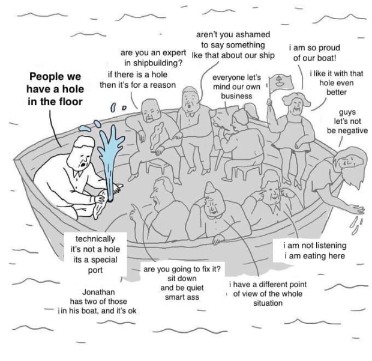
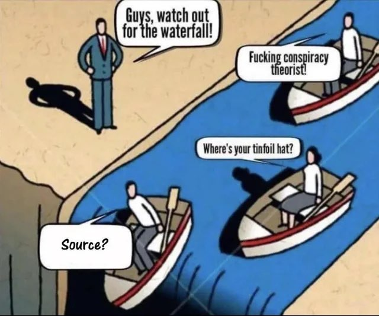

Overpopulation FAQs
Understanding Population Dynamics, Overpopulation, and Population Control
1. What Is Overpopulation?
Overpopulation is when there is an excessive number of occupants (people, animals, plants, etc.) in a particular area. Specifically, that is when the number of occupants exceeds the carrying capacity, i.e. the ability of that area to provide for them. Overpopulation is preceded by ecological overshoot.
The primary misconception of overpopulation is that it only depends on the number of organisms/people (within an environment). 1000 people living in the fertile crescent isn’t overpopulation. 1000 people living on a 2-acre island would almost certainly be so. This misconception also assumes that if a certain number of individuals can be supported in the present, there’ll be no problems in the future, but this is not true.
Aside from the population size, all the other factors that are needed to determine overpopulation are the ones that determine the carrying capacity and overshoot of a defined environment. We need to determine the carrying capacity and resource consumption in order to determine overpopulation. And the only way to determine it is with a mathematical model.
Thus, overpopulation is determined by at least four parameters (or at least six for humans):
- The number of creatures (usually of a single species) in an area
- An area and its available resources
- The average ecological footprint per creature (for humans, the average standard of living per capita)
- A timeframe
- The technology and substitution options available to those creatures (for humans)
- The distribution of wealth and opportunities (for humans)
The most accurate models for calculating overpopulation would use more than 4-6 parameters, especially if additional parameters are created for modeling accessible resources and resource consumption. Creating an accurate overpopulation model for today’s world is a difficult task because the population, supply of resources, and consumption of resources are each changing faster than ever before in history. For comparison, it could potentially be as difficult as trying to model climate change. For more information, we discuss how to create a dynamic and predictive population model here.
We have a proposal for preventing overpopulation that is likely to succeed with the fewest number of negative consequences. The only way the proposal could fail is if we don’t gain the collective political will to implement it.
2. Hasn’t Malthusianism Been Debunked?
Thomas Malthus is widely regarded as the most famous early intellectual of population dynamics. In 1798, Malthus wrote “An Essay on the Principles of Population”, stating:
Must it not then be acknowledged by an attentive examiner of the histories of mankind, that in every age and in every state in which man has existed, or does now exist:
That the increase of population is necessarily limited by the means of subsistence.
That population does invariably increase when the means of subsistence increase.
And that the superior power of population it repressed, and the actual population kept equal to the means of subsistence, by misery and vice?
Malthus was correct that human populations had historically been limited by subsistence farming, at the time he wrote the essay.
Contrary to what most people know, Malthus actually did factor in increases to the productivity of land. For example, he covered the entirety of Britain in greenhouses and gardens. In his time, noticeable increases in the productivity of land were seen, besides just bringing in marginal land into cultivation. So, he didn’t make that mistake. In another thought experiment, he considered a very generous constant rate of increase in the supply of food of Britain.
Nevertheless, Malthus still didn’t anticipate the productivity increasing as fast as it did, due to the discovery of additional energy sources. He didn’t foresee the contributions that people like Norman Borlaug would made through genetically engineering crops. Malthus’ thesis about linear production versus exponential consumption rates was thus incorrect.
We should note that the claims and implications made in Malthus’s essay (i.e. Malthusianism) are different from the definition of Neo-Malthusianism.
Malthusianism: The theory that potentially exponential population growth can surpass the linear growth of an environment’s carrying capacity (including its food supply and other resources), which eventually causes members of the population to die off until settling back down to the carrying capacity.
Neo-Malthusianism: The theory and concern that overpopulation (and overconsumption) may increase resource depletion and/or environmental degradation and lead to ecological collapse or other hazards. Neo-Malthusianism is often coupled with advocacy of human population planning to ensure sufficient resources for current and future human populations as well as for other species.
We are not defending what Malthus wrote in 1798 (that populations are limited by subsistence farming). Instead, we are arguing in favor of Neo-Malthusianism, which is a completely different concept that can be defended by an upgraded knowledge of history, population dynamics, evolutionary reasoning, and ecological overshoot. We support well-grounded Neo-Malthusian solutions as a solution to the overpopulation disaster that is bound to plague humanity within the 2000s.
Malthus being wrong does not make the Cornucopians right, because there are always more ways to be wrong than there are to be right. Just because we haven’t faced overpopulation yet (in modern times), that doesn’t mean that it will never happen. One could point out that the world population has never declined since the beginning of the Industrial Revolution and has been able to support most/all of Earth’s inhabitants for the last 200+ years. But a similar series of numbers for house prices in 2006 could show that house prices always go up… until they didn’t in 2008.
Related: Debunking Chapters 6 through 9 of Henry George’s Progress and Poverty.
3. How Is Overpopulation A Threat To Humanity?
The idea that overpopulation is not a problem is usually based on the evidence of recent history. So far, we’ve been able to expand food production to keep up with population growth for a hundred years or so. And supposedly we will be able to keep doing this… forever?? The absurdity of this is pretty obvious. – Blithering Genius, Dysgenics, Overpopulation and Conventional Ignorance
Many people are biased these days to believe that larger populations are always better since we currently live in the modern era where the world population is at the highest point ever in human history. But larger populations aren’t always necessarily better, especially if they mostly consist of mediocre people. It is necessary for industrialized societies to have large populations to sustain themselves and have a robust division of labor, but beyond some limit, industrial societies won’t improve much by having more people:
Can you think of any thing, any problem, on any scale, from microscopic to global, whose long-term solution is in any demonstrable way aided, assisted, or advanced by having a larger population? Can you think of anything that will get better, by crowding more people into our cities, our towns, our state, our nation, or on the Earth? – Al Bartlett
Just as humanity will never transcend evolution, humanity will never transcend the problem of scarce resources or overpopulation.
3.1. What will happen if we don’t regulate the world population?
Once there’s overpopulation, it’s basically game over for civilization. Overpopulation causes civilizations to fight wars over scarce resources, until they finally collapse from decimating each other.
- Food Shortages: Malnutrition, greater susceptibility to disease, stunted growth, stunted brain power, starvation, etc.
- Water Scarcity: Freshwater shortages, dehydration, poor water quality, not enough water for crops, freshwater ecosystems, or industrial use, etc.
- Global Sand Shortages: The particular type of sand that is necessary to build semiconductors is in ever-decreasing supply.
- Climate Change: Deadly heat waves, hostile crop growing conditions, increasing flooding, runaway greenhouse effect, etc.
- Environmental Damage: Irreversible pollution, deforestation, extinction of flora and fauna, etc.
- Economic Strain: Unaffordable housing, unemployment, decreased living standards, fewer resources per capita, etc.
- Social Problems: Overcrowding, increased crime, stress, social unrest, political instability, etc.
- Depletion of Non-Renewable Resources: The lack of fertilizer and other resources needed for manufacturing will kill modern civilization.
- Resource Wars will be fought over scarce natural resources. Food-importing countries with unsustainable populations will emigrate in mass numbers, and the remaining citizens may invade other countries to steal land and food to feed their starving populations, lest they will die from famine. The warfare will further destroy the planet and lead to the irreversible downfall of civilization as we know it.
- Other consequences will depend on which resources are limited.
There are only two ways to regulate populations: 1. mass death, or 2. restrictions on the number of births (population control). Mass death is highly undesirable, and low fertility cannot be voluntarily achieved, so that leaves population control as the most desirable option for regulating populations.
If we don’t regulate reproduction, then we are destined to face the largest, most catastrophic overpopulation event in history, followed by the largest famines and wars ever seen before in human history. Except this time, once the wars end by decimating the world’s population, it won’t be possible to rebuild civilization to the point where 20th or 21st lifestyles are possible once again. Once the world’s fossil fuels are completely exhausted, the necessary energy input for restarting modern civilization will no longer exist in an easily accessible form, so the world be stuck in a permanent Dark Age, similar to 1700s Europe at best. Future generations of humans may never know what it’s like to live the luxurious lifestyles that we live today and take for granted.
There is only one solution for preventing all this. There is precisely one way that we can have long-term prosperity, a complex civilization, and basically have a future. And that is to regulate our reproduction. This is not a radical departure from what we have been doing. It doesn’t require any radically new mechanisms of social control, any radically new technologies, or any new moral principles, or even a big change in our values. Most people already value human existence, value our civilization, and don’t want billions of people to die. And don’t want to go back to the Dark Ages. Most people don’t want those things. – Blithering Genius, Gnon Arguments
Also, conserving natural resources isn’t just about avoiding overpopulation. It’s also about ensuring that the Earth has enough resources to ensure that humans and future generations will be able to have a comfortable standard of living.
For example, Anatoly Karlin has estimated that the Earth could feed 100 billion people. He’s probably technically right about that, but those 100 billion people wouldn’t each have a comfortable first-world lifestyle. Hence, nobody would want the Earth to have 100 billion people.
3.2. Why should we act now, instead of waiting until it becomes more apparent?
Slowing population growth takes time unless we resort to drastic, ugly, highly unpopular solutions.
The problem with the “time will tell” attitude towards overpopulation is that it assumes that it’s okay to risk overpopulation happening and all the serious consequences that will result from that. That is insane. Who on Earth thinks that it’s a good idea to risk the possibility of billions of people dying from war and famine just to test if Neo-Malthusianism is a legitimate concern? It’s more reasonable to predict the future, and figure out what should be done to have the best future possible.
The most urgent problems of our times are the ones that cannot be discussed. We know that it will be difficult (and perhaps impossible) for some people to accept that population control is necessary for achieving a sustainable long-term civilization. Almost every ideology assumes that its ideal is natural and stable, and thus would exist without some perturbing force that knocked us out of that state. But this is only an assumption that has not been sufficiently confronted by sound reasoning and reality itself.
3.3. How does overpopulation compare to climate change?
3.4. Overpopulation can happen instantly and unpredictably.
It’s helpful to distinguish between two types of Overpopulation:
- When the population increases faster than the carrying capacity.
- When the carrying capacity falls faster than the population can fall.
Type #2 tends to be caused by unexpected scenarios that give the population less time to prepare. Most people don’t realize that it’s possible for overpopulation to happen both instantly and unpredictably if a major catastrophe happens, just like the Irish Potato Famine (1845-1849). Once the potato was introduced to Ireland, the country had a population explosion since the crop increased the number of available calories and nutrition to the population.

Nobody would’ve predicted in 1843 or 1844 that the island would be infected with a blight within the next year that would cause a massive famine where a million people die and another million have to emigrate. One year, the island was not overpopulated because it had enough resources for everybody. The next year, it was facing famine and mass exodus. That’s how quickly overpopulation could potentially happen, if the catastrophe causing it is severe enough.
Read More: Historical Overpopulation in India, China, and Ireland.
Video: Why Ireland Has Fewer People Than 200 Years Ago.
The key to causing overpopulation is to have improved living standards (i.e. a new staple crop or technology that causes a population boom), followed by some event which disables the resources that were responsible for the population boom. The population growth leading up to an overpopulation event might happen gradually, but the catastrophe that leads to the overpopulation happens instantly and unpredictably. All it takes is a major unprecendented catastrophe, and everything changes. Ideally, we should always be prepared against a potential overpopulation crisis, since it’s always possible for an unpredictable colossal catastrophe to happen.
3.5. Every existing organism can only exist at the cost of another.
In a zero-sum biological environment, resources are finite and cannot be created or destroyed because the ecosystem has reached its carrying capacity. Therefore, for one organism to survive, it must consume resources that would otherwise be available to other organisms. This means that the survival and growth of one organism can only come at the cost of other organisms.
Read More: When Life Becomes Zero-Sum - Morality FAQs.
Read More: Every Existing Organism Can Only Exist At The Cost Of Another.
4. What is Demographic Transition Theory?
Demographic Transition is a historical phenomenon.[1] It refers to the historical shift from high birth rates and high death rates in societies with minimal technology, education (especially of women) and economic development, to low birth rates and low death rates in societies with advanced technology, education, and economic development. In this essay, we are not disputing that any of this has occurred over the past two centuries. But we do disagree on why demographics have changed in developed countries: (1), (2).
Demographic Transition Theory is about the most widely accepted model that purports to explain the demographic transition. It predicts that low fertility and low mortality is a stable state of affairs in the modern environment. It also predicts that humanity will transition to these demographics in the next several decades and remain that way in the following future. In the next section of this essay, we will explain why these predictions is based on false premises and fallacious reasoning. Specifically, we are debunking prediction and theory about what will happen in the future, and why it will happen.
5. Why Is Demographic Transition Theory Incorrect? Don’t Populations Stabilize Over Time?
The Long Answer:
The Short Answer:
- Genes and memes that promote high fertility[2] will be selected for over the next several generations. This will cause the world population to spike upwards again in a century or so.
- Overpopulation depends on much more than the number of people, so examining the birth rate alone is not a good predictor for overpopulation.
- Infinite population growth cannot occur within a finite environment.
- New technologies and better economic policies may expand the carrying capacity, but they won’t solve overpopulation in the long run.
Most humans are generally terrible at understanding exponential growth and feedback loops. When overpopulation is brought up, most people get hung up on the moralistic fallacy, the idea that the earth is finite, and that humans aren’t magic (i.e. there are hard limits to what humans can do with technology).
5.1. Why should we worry about overpopulation when birth rates are declining?
Overpopulation depends on much more than the number of people:
- The population is still increasing, just more slowly.
- The death rate has decreased because more people are living longer than ever.
- Increasing the world’s living standards would increase the world’s birth rates.
- Newer technologies may prolong human lifespans, further increasing the population.
- As the developing world transitions towards more developed, first-world lifestyles, that will put further strain on the world’s resources, even if the world population were to stay the same and not grow at all.
- Once evolution finishes selecting for people who don’t use contraception, the world’s fertility levels will continue to rise ever more.
- Overpopulation can happen instantly and unpredictably.
5.2. Don’t countries with declining populations like Japan or Russia prove that human populations aren’t bound to increase towards infinity?
To answer the question: no.
Our theory of population dynamics has a better, alternative explanation for why some countries’ populations are not currently rising towards infinity that is consistent with our claim that all populations eventually increase towards infinity. Russia, Japan, and other countries are experiencing declining populations because every population of organisms goes down when it is introduced to a new selectionary pressure that it is unadapted to (birth control and expensive post-industrial cost of living, in this case). As soon as enough selection occurs to make the population well adapted to its new environment (i.e. organisms with higher fertility rates[2] are selected for), the populations will rise until they breach the carrying capacity once more. We just have to wait for evolution to catch up. Evolution doesn’t happen overnight. Neither does advanced technology cause evolution to stop.
Additionally, one of the biggest reasons why many contemporary countries have extremely low birth rates (and thus declining populations) in the first place is because it’s simply too expensive for many couples for children. As we have shown here1 and here2, improving economic conditions would cause birth rates to increase because more people would be able to afford to have (more) children.
5.3. Won’t rising living standards solve overpopulation?
Raising living standards would make overpopulation worse, not better. Raising living standards in developing countries might (temporarily) slow down the population growth of those countries, but higher living standards require more resources and are more taxing on the environment, thus increasing the risk for overpopulation. Overpopulation depends on much more than than the number of humans. Most of the world currently does not live a first-world lifestyle, and if all of the 8+ billion people living on Earth were to live such an environmentally taxing lifestyle today, we would undoubtedly face overpopulation and ever-exacerbated pollution and climate change as soon as that happens. Even if the population were to stop growing, that doesn’t mean that overpopulation ceases to be a threat.
Rising living standards also cause people to live longer lives, which further contributes to overpopulation by causing more people to live on the planet simultaneously.
5.4. Won’t rising living standards cause populations to grow slower or stop growing?
No. Not only do rising living standards exacerbate overpopulation by increasing resource consumption, but they also increase population growth. There are countless historical examples, including but not limited to:
- The Neolithic Agricultural Revolution: The development of agriculture around 10,000 years ago led to a significant increase in food production, which in turn led to a population boom.
- The Columbian Exchange: The introduction of corn, potatoes, and other crops to the Old World caused populations to increase around the World, and is responsible for most of the world’s population growth between 1500 and 1804, when the world population is estimated to have reached 1 billion people for the first time in human history. This includes the rapid increase of the Irish population after the introduction of potatoes to Ireland.
- The Colonization and Settlement of the Old World: French and English settlers in the Americas adapted to conditions of abundance by increasing their fertility. Women married younger and had more children, and the population of Europeans in the Americas expanded rapidly. Until fairly recently, families with 10 or more children were common in Quebec.
- The Industrial Revolution: The Industrial Revolution of the 18th and 19th centuries led to increased wealth, improved living conditions, and a rise in life expectancy, resulting in a population boom. The greatest economic revolution in history led to the largest population boom in history.
- The Green Revolution: The Green Revolution of the 1900s led to an increase in food production through the use of new technologies such as pesticides, fertilizers, and irrigation, which in turn led to a population boom in many developing countries.
- The Great Depression and the Post-World War II Baby Boom: Birthrates dropped during the Great Depression due to the poor economic conditions. After World War II, many countries experienced a period of economic prosperity and increased wealth, which led to a significant increase in population.
- The Effects of China’s Economy on Its Birth Rates: China’s birth rates dropped significantly during the Great Chinese Famine from 1959 to 1961, and the birth rates more than doubled when the famine ended and economic conditions improved. Note that China definitely would have had a population boom during the Chinese Economic Miracle, if it weren’t for the implementation of the One Child Policy in 1980. Source
- Even though there was a general decline in fertility across the developed world in the 1900s, fertility rates fell faster and went lower in the Communist Soviet Union than they did in the much wealthier United States.
- In the 2000s, the Great Recession caused birthrates to fall.
- The COVID-19 Recession caused birthrates to fall, and birthrates went back up as soon as the economy started recovering in early 2021.
- Polls and studies consistently show that many people have more children if they were wealthier.
{kind=link}
The idea that increased wealth causes decreased fertility[2] is not consistent with historical evidence. Abundant food causes population growth, not population stability or decline. When increased wealth correlates with decreased fertility rates, the better explanation is that decreased fertility rates (temporarily) increase wealth.
5.5. Why would some people have more children if they were wealthier?
The correlation between poorer people having higher birth rates, and wealthier people having lower birth rates doesn’t account for how it’s more likely that low fertility and low fertility lifestyles cause higher incomes, rather than the other way around. Higher education levels, stronger commitment to the labor force, a preference to live in urban locations, etc all cause higher incomes and lower fertility.
But at the same time, we also know that greater wealth has historically caused higher fertility. Fortunately, there are studies where wealth & income have been isolated from lifestyle factors, so we can analyze how only wealth affects fertility rates:
- One study found that a 10% increase in income resulted in an 8% increase in birth rates.
- Another study found that a $100,000 increase in the value of one’s home results in a 16% increase in the probability of having a child.
Additionally:
- Census data indicates family size correlates with household income.
- Fertility rates typically drop during economic recessions and rise during periods of prosperity.
- Survey data from the Pew Research Center shows financial stability consistently ranks among the top concerns for young adults when considering whether to have children.
Furthermore, the high cost of child-rearing is a major reason why child-free people aren’t having children:
- According to Pew, 17% of non-parents in the US who want to have children but won’t have children chose “financial reasons”.
- 64% of young adults cited “Child care is too expensive” as a reason for having fewer children than their ideal number in a 2018 New York Times poll.
- The high cost of living in China is a major reason why China’s birth rates have not rose after the government removed all penalties and restrictions on people who have multiple children in July 2021.
- Costly housing is a major reason why South Koreans are having fewer children.
If anybody knows of any other studies or news articles showing how a high cost of living has negatively affected fertility rates around the world and people’s willingness to have children, please message me on my contact page.
5.6. Why is there currently a negative correlation between wealth and fertility rates?
Correlation does not imply causation. Exhaustive historical evidence, polling statistics, and straight-forward reasoning conclude that increasing wealth causes fertility rates to increase.
A more plausible explanation for the negative correlation between wealth and fertility rates is that low fertility (temporarily) increases wealth. Having fewer children per family means that people can invest more energy into creating capital, instead of raising children. This is consistent with historical examples where lower fertility rates likely led to an increase in the production of wealth.
Low fertility might have played a role in the industrial revolution in Europe. Western Europeans had lower fertility than most other people around the world, due to the Western European marriage pattern. In Western Europe, women would often delay marriage and children until their mid-twenties. The result was lower fertility and more energy to invest in the creation of capital. Capital increases the efficiency of labor, which allows for even more investment in capital, but only if the population does not expand to consume the additional production. The industrial revolution was one of the few times in human history when economic growth outpaced population growth, leading to prosperity.
The recent Chinese economic boom might also be partly due to lower fertility. After the communist revolution, there was a huge decline in the Chinese fertility rate. Roughly a generation later, the Chinese had a huge economic boom due to rapid industrialization. This is usually explained as the result of China adopting market-based economic policies. However, I believe that lower fertility played an important role. It shifted labor from the creation of human beings to the creation of capital. – Blithering Genius, Demography and Destiny
We have to re-emphasize that periods of lower fertility can only cause temporary increases in economic output. Economic growth is slowing down in developed, low-fertility countries, since their populations are aging and fewer children are being born. This leads to lower economic growth. Just as infinite population growth can’t occur indefinitely, infinite economic growth can’t occur indefinitely either.
The second factor is that wealthier countries tend to have greater access to birth control, which causes lifestyle changes that lead to lower fertility rates (note that these changes in the fertility rates are temporary in the long-term).
5.7. Do higher population densities lower fertility rates?
Historically, cities were often population sinks due to higher disease rates, not low fertility. Diseases can increase death rates, but there’s nothing about cities that causes lower fertility rates.
If density lowered fertility rates, then the Ashkenazi Jews would be basically extinct by now. The Jewish population in Europe grew from about 2.5 million in 1800 to around 8.7 million by 1914, despite living primarily in urban areas. In many cases, the increasing Jewish population lead to overcrowding in cities, hence one reason why antisemitism was rapidly growing. The Jewish population explosion during the 1800s is evidence that city dwellers can have high fertility rates too, if only they chose to do so.
The Japanese also had high fertility in the late 1800s and early 1900s. This is in spite of Japan being a largely urban country, since 75-80% of the archipelago is covered by mountains.
There are also densely populated regions with relatively high fertility in today’s world. Examples include the Gaza strip; Cairo, Egypt; Karachi, Pakistan, and Kabul, Afghanistan. Each of these cities and regions have at least 3 children per woman.
Smaller apartment sizes are always the most profitable type of apartment for landlords and real estate developers to make. This makes it difficult to have large families in urban cities.
Smaller apartment sizes may be more favorable from a landlord’s perspective, but that completely ignores the potential of the consumers to demand larger apartment sizes. If the demand is strong enough, then landlords will want to build larger apartment complexes, lest they lose out on a lot of potential profit. The Orthodox Jews in New York are a great example of how it’s possible for large families to live in densely populated urban areas.
Read More: Does Density Lower Fertility? – Noah Carl and Bo Winegard.
5.8. What is causing birth rates to decline?
First, let’s re-emphasize that the increased wealth seen in modern times is not the cause of the world’s declining birth rates at all.
The declining birth rates that have occurred worldwide since the mid-1900s baby boom were ultimately enabled by the rising availability of birth control and its encouraged use. This is easy to prove. If you ask any parent who has biological children, they will testify that their birth rates were low when they were using birth control, and that their birth rates increased when they stopped using birth control. Alternatively, eliminating access to birth control during the 1960s (i.e. the sexual revolution never happened) would’ve caused the world’s birth rates to increase rather than decrease as they had in the past several decades. It really is that simple. The belief that birth control doesn’t lower birth rates is illogical and absurd.
Improved access to birth control and increased family planning methods made it possible for women to delay having children in order to pursue careers, higher education, and other forms of personal fulfillment, rather than starting a family. These societal changes and ideologies like Feminism and Humanism have caused a cultural feedback loop where it has become increasingly more socially acceptable for people to have fewer children or no children at all if they so choose.
It must be emphasized that none of those cultural and societal changes ever would’ve happen in the first place if it wasn’t for birth control. If there was no birth control at all, then just about every woman would have 6-7+ kids and they wouldn’t have any time to pursue anything else. When children are born, people have to care for them, instead of spending time on furthering their careers, education, and hobbies. Birth control thus “liberated” people from the responsibility of having to care for children. It is the main factor for explaining why fertility rates have declined since the 1960s.
As of today (the 2020s), birth control usage is the primary selectionary pressure on the human genome. People who either consciously choose to have children or who conceive children by accident are being selected over those who don’t want to have children.
A Brief History of Birth Control (1800s to 1900s)
See: Wikipedia: Birth control before the 1900s.
Increased birth control is the same main reason why birth rates decreased in the developed world during the 1800s and early 1900s, until the baby boom occurred. The rise of new birth control technologies and new forms of contraception in the Western World is consistent with the drops in TFR on the following charts from 1800 to 2020:
- https://www.statista.com/statistics/1033027/fertility-rate-us-1800-2020/
- https://www.statista.com/statistics/1033074/fertility-rate-uk-1800-2020/
- https://www.statista.com/statistics/1033137/fertility-rate-france-1800-2020/
- https://www.statista.com/statistics/1033102/fertility-rate-germany-1800-2020/
- https://www.statista.com/statistics/1033179/fertility-rate-spain-1850-2020/
- https://www.statista.com/statistics/1033851/fertility-rate-russia-1840-2020/
- https://www.statista.com/statistics/1033939/fertility-rate-poland-1800-2020/
- Et Cetera
All the other TFR charts for Western countries follow a similar pattern. The TFR was around 7 children per women at the beginning of the 1800s. The best explanation for why fertility dropped from 7 to 2-3 children per women over 100 years (from 1800 to 1900) was the increasing effectiveness, accessibility, and affordability of birth control.
Fertility was lowest in the 1900s during the Great Depression and WWII. Aside from those years, the TFR was still either above or around the replacement rate for most (or all?) countries before the mid-1900s baby boom happened.
New birth control technologies in the 1900s also contributed to lowering birth rates.
- IUDs were developed during the early and mid-1900s.
- Vasectomy as a method of voluntary birth control began during the Second World War.
- The oral contraceptive pill was invented in 1960.
- Emergency contraception was first developed in the 1970s.
- Roe vs Wade was also passed by the US Supreme Court in 1973, which legalized abortion nationwide across the US and gave people yet another viable method of birth control.
I know people who have had vasectomies, IUDs, emergency contraception, and abortions. I can guarantee that they would all have higher birth rates if these birth control methods weren’t available to them. It’s clear that the increasing the availability and effectiveness of birth control methods contributed to the world’s falling fertility rates from the 1960s to 2000.
Historically, most Catholics opposed birth control. However, a majority of Catholics support using contraception these days. The increased willingness of Catholics to use birth control over the 1900s and 2000s has likely contributed to falling fertility rates in the Western World.
From 1947 to 1957, Japan’s total fertility rate dropped from 4.54 to 2.04. The reason why the fertility rate was able dropped so drastically within just 10 years was if Japan had higher contraception introduced between those years. This huge change in Japan’s fertility rate is not well explained by women pursuing higher education or careers, because those social changes and the Japanese economic miracle didn’t start occurring until the late 1950s and 60s. As another example, the fertility rate in the Philippines fell from 2.7 in 2017 to 1.9 in 2022. That rapid change in the fertility rate is best explained by the sudden rise of birth control within the Philippines.
Read More: What Caused the Fertility Collapse? – Blithering Genius.
People have fewer kids when they can expect 100% of their kids to survive past the age of 5.
That’s true for many people, but not for other groups. For instance, the Amish, Orthodox Jews, Fundamentalist Muslims, etc all still have lots of children and fertility rates that are as high as 6-8+ children per woman. This is in large part because those groups don’t use birth control. This further illustrates our point that birth control is what’s actually responsible for the world’s record low fertility rates, not better living standards.
Decreasing religiosity is causing low fertility rates.
That doesn’t fit the evidence. Three of the most Christian countries in Europe (Portugal, Poland, Greece, etc) all have fairly low fertility. Likewise, Japan, Estonia and Czechia have relatively higher fertility, despite being mostly atheistic and having little to no immigration from the third world.
The Catholic Church opposes birth control, yet Catholics have low fertility. Doesn’t that suggest that birth control doesn’t lower fertility rates?
No, it doesn’t. The Church may officially oppose birth control, but its position isn’t representative of what most Catholics actually believe and practice these days. A majority of Catholics use birth control. Most of them oppose the Church’s official position. So, it’s not surprising that most Catholics have below replacement fertility when most of them practice some form of birth control.
Reducing wealth inequality will reduce fertility rates, because greater wealth equality correlates with lower fertility rates.
This is wrong for the same reason why it’s wrong to conclude that raising living standards would lower fertility rates. There are better explanations why lower wealth inequality sometimes correlates with lower fertility rates.
Read More: What Caused the Fertility Collapse? – Expanding Rationality.
5.9. How can you be so sure that humans will evolve to resist the negative effects that birth control has on fertility rates?
The better question is: Why wouldn’t this happen? Cultures that view contraception and abortion as being taboo have higher fertility rates, and evolution always selects for organisms that have higher fertility rates, as well as genes and memetic traditions that promote higher fertility rates. It’s important to understand that genes and memes work together.
There’s plenty of evidence that genes affect political differences and behavioral patterns, socially conservative people tend to have more children than socially liberal people, and different races have different fertility rates within developed countries, so there are no good reasons to assume that genes can’t also affect how many children a person is inclined to have. If there’s genetic variation among a population, and some genes promote higher reproductive success than others, then we can conclude that evolution will select for genes that increase reproductive fitness.
It’s also possible that mutational load partially contributes to the lower birth rates of the modern world. If reproduction in recent decades have been dysgenic, then the global decline in birth rates may simply be part of a self-correction process where dysgenic reproduction eventually gets replaced with more eugenic reproduction. If the people who are having larger families in developed countries have fewer harmful mutations on average, then dysgenics would reverse in future generations.
But no specific genes have been identified that are scientifically shown to cause higher fertility.
We don’t need to identify specific genes to know that fertility rates are affected by genetics. Geneticists can’t even figure out which specific genes cause differences in height and intelligence. Everybody knows that height is ~80% determined by genetics, but no one says that you need to specifically identify which genes cause height differences to prove that height is mainly influenced by genetics. It is sufficient to figure out that fertility (as well as height and intelligence) are mainly affected by genetics with empirical evidence.
Birth control causes lower fertility rates, and even if a majority of the population favored lower fertility for the sake of avoiding overpopulation, there is no way to guarantee that every single person is going to value low fertility and choose a low-fertility lifestyle for the sake of avoiding overpopulation. Overpopulation is a free-rider problem. No biological species will ever be able to transcend evolution.
If the world population ever reaches 11-12 billion people (assuming it can go that high without destroying and plummeting itself first), the United Nations will probably just raise the population ceiling of their “prediction”, instead of dropping their bogus theory altogether. Mostly likely, the UN will never admit that Demographic Transition Theory is wrong because it would destroy their credibility. They will never create a population theory that has predictive power until they bother to understand bio-evolutionary reasoning and its principles.
Read More: Traditionalism is the Future.
But human evolution takes tens or hundreds of thousands of years to play out.
That’s not true. Human evolution has accelerated to occurring 100 times faster in the past 10,000 years than in all the years prior. A lot can happen in just a few generations. For example, consider: Wikipedia: Recent Human Evolution.
5.10. Why is avoiding overpopulation a game theory problem?
The problem with assuming that overpopulation can be solved by most people choosing to have fewer children is that many people will choose not to have less children. The people with the highest fertility levels while everybody else has a below-replacement fertility create a free-rider problem. They benefit from having a higher reproductive success and their children benefit from having more resources available for them to exploit since everybody else chose to have fewer children. Everybody else is negatively affected because they had lower reproductive success and fewer resources available for them since the high-fertility people left behind fewer resources for everybody else. Every existing organism can only exist at the cost of another.
It’s true that most people in developed societies choose to have few or no children. That doesn’t mean that most people in the future will have low fertility. Why? Because people in the future have to be born, and more of them will be born to people with high fertility than low fertility. Even if almost everyone chooses low fertility, those with higher fertility will simply outbreed them in a few generations. The Amish alone could replace the entire world population in less than 300 years, at their current rate of growth. As another example, consider the high birth rates of Orthdox Jews in places like Kiryas Joel.
Whether we like it or not, the only way to prevent overpopulation is to mandatorily impose population control on everybody. If most people are trying to maintain a low fertility population, but a few do not, then population growth is a Free-Rider Problem. On the other hand, if everybody is trying to reproduce as much as possible, and there is no population control to prevent the population from exceeding the carrying capacity, than population growth is a Tragedy of the Commons. Over time, population growth will transition from being a Free Rider Problem (as it currently is) to becoming a Tragedy of the Commons. Either way, population growth is a game theoretic problem. And since the purpose of Government is to solve game-theoretic problems, government is the perfect (and only) solution to solving overpopulation.
Relevant Satirical Article: We Must Preserve The Earth’s Dwindling Resources For My Five Children.
5.11. Doesn’t your reasoning for refuting DTT conflate memes with genes?
No, and for several reasons. For one, we’ve addressed earlier why it makes sense to believe that genes can affect fertility rates, even if no memes are involved.
Second, statistics consistently show that less educated, less intelligent, and more religious people tend to have more children than people who are more educated, more intelligent, and atheist. Intelligence is well-documented to be a polygenic trait with an estimated 0.8 heritability. The world has become more educated and more atheist in the last few decades, but there’s no reason to assume that the world will continue to become increasingly more educated and more atheist when those people have fewer children than people who are less educated and more religious. It follows that the world will become more religious and more uneducated since those memes increase fertility and will result in a feedback loop. Studies have repeatedly shown that the vast majority of people stay within the religion they were born into.
Third, genes and memes work together, so if memes like religion are currently causing religious people to have more children, then the genes that are associated with higher religious beliefs are going to be reproduced with greater frequency than genes that make people more likely to be Atheist and such. Even if our reasoning is evaluating the effects of memes instead of genes, we still have to consider genes due to Adaptive Coherence.
Fourth, memes can be reasonably categorized into “Traditions” and “Fashions or Cults”. Religions would be categorized as “Traditions” because they propagate from parent to child and tend to increase reproductive success, whereas memes like Feminism and Antinatalism would be categorized as fashions because they tend to propagate between peers, not from parents to children. Fashions like Feminism and Antinatalism may be temporarily increasing in popularity now, but neither of them promotes reproductive success, so they are both destined to decline in their numbers of believers, given enough generations passing by. Traditions encourage reproductive success, whereas Fashions do not. Fashions tend to be temporary phenomena, whereas Traditions tend to be stable, long-term phenomena.
Fifth, populations cannot be thought of as conglomerates because different segments of the population have the potential to grow exponentially.
For example, Islam is expanding rapidly due to population growth. That is because Muslims, and especially fundamentalist Muslims, have higher average fertility. They keep women in the home making babies. The Muslim world has grown more fundamentalist in the last 50 years, mainly because fundamentalists had more children than secularists and moderates in Muslim societies. Islam is now spreading to the West, due to population pressure. Muslims are replacing the declining native population of Europe, which has very low fertility.
There are other examples of religions that promote fertility. Take the Amish for example. Their current rate of population growth corresponds to doubling every 20 years. That is almost entirely due to reproduction – there is very little conversion into the Amish community. At their current rate of growth, the Amish population would exceed the current world population in less than 300 years, starting from its current size of 250,000. If everyone else went through the demographic transition except the Amish, then after 300 years the global population would be almost entirely Amish.
In spite of being anti-modern, the Muslims and the Amish are adapted to modernity. They reproduce their genes and their memes. As time goes on, other adaptations will emerge. One thing is certain: humanity will not settle into a stable pattern of low fertility unless we impose it on ourselves. – Blithering Genius, Demography and Destiny
5.12. Will the world population peak and decline after 2060?
It’s hard to say since that’s decades into the future. Theoretically, the most accurate predictions would use a complex computer model that collects the most important data and makes the right computations, given the inputs and known variables. It’s possible that the world population could peak at 12 billion around 2060 or so and start to decline after that. But it’s unlikely because that prediction relies on a lot of assumptions, many of which are rather fallacious.
- As covered, populations are not self-regulating. DTT makes false assumptions about biology, evolution, and fertility. Two unknown questions are how fast natural selection will occur and what its effects will be.
- DTT doesn’t acknowledge that other factors also contribute to overpopulation, not just birth rates.
- The DTT models for 2060 all assume that overpopulation won’t occur before then. It is far from guaranteed that the Earth’s global supply chains will continue to stay stable for the coming decades. We have to recall that overpopulation can happen instantly and unpredictably, especially if all the infrastructure, systems, and/or technology that sustain such a high population were to fail for one reason or another.
- Even if the world population miraculously declines for multiple decades after 2060, it won’t last once the population adapts to resist the effects of birth control and modernity. It’s simply not true that the world population will naturally stabilize at a flat rate without population control, unless there’s either a large collapse and humanity returns to being limited war, disease, and famine.
There too many unknowns about the future, but if humanity is rational enough, we can eliminate a majority of these unknowns by taking control of our destiny and implementing safeguards that prevent the worst possible scenarios from happening. Population control via reproduction licenses is probably the most important safeguard for limiting the future’s unpredictability and preventing unprecedented catastrophe, but Georgism and other solutions for raising the carrying capacity are important as well.
6. But Humanity Is Nowhere Close To Overpopulation.
That is false. There are plenty of signs and examples of overpopulation in various regions of the world:
- Wikipedia: Non-Renewable Resources.
- The Energy Transition Delusion: Inescapable Mineral Realities – Mark Mills; Video lecture about mineral mining efficiency dropping every decade. There simply won’t be enough resources to support the world economy’s demand in the next few decades.
- Morocco has 3/4 of the world’s known, accessible reserves of rock phosphate, our main source of phosphorus. Unless we figure out ways to recycle phosphorous more efficiently, or figure out ways to mine it from the ocean floor (a temporary and expensive solution), even all the phosphorous in Morocco would only last the Earth ~300 years, baring some assumptions.
- Video: The World’s Helium Problem: When Will We Run Out?
- Advancing Technology Leads To Increases In Resources And Energy Demands, Not Decreases.
- YouTube Playlist: The Crash Course.
- See: Climate Change And Global Warming: An Analysis And Solutions.
- The world is likely to face water shortages in the next several decades.
- China’s Upcoming Water Crisis
- Wikipedia: Water Scarcity in India
- Wikipedia: Water Scarcity in Iran
- Wikipedia: Water Scarcity in Africa
- Wikipedia: Water Scarcity in Mexico
- South Africa’s Catastrophic Water Problem - Real Life Lore
Not even developed countries like the US can guarantee that they won’t be facing water shortages in the near future. Just look at this photo of Hoover Dam and Lake Mead:
Figure 2: Water levels at Lake Mead. Also see: Lake Mead Water Level Graphs.
6.1. Couldn’t resource scarcity problems be avoided by managing our resources better?
That could only be temporary solution at best. Managing our resources better would indeed raise the carrying capacity of the Earth, but rising living standards consistently lead to population booms throughout human history. It is also a biological fact that populations always reproduce up to their carrying capacities, so raising the carrying capacity of the Earth is not a permanent solution for preventing overpopulation.
Poverty is the default condition of humanity. Poverty wouldn’t exist if humans didn’t exist. Existence makes poverty possible, so it’s guaranteed without sufficient human action. And sufficient human action is not guaranteed.
There’s also the problem of Jevons paradox. Technological innovations might increase the efficiency with which a resource is used, but they may also inadvertently increase the demand for said resources.
The only way to permanently prevent overpopulation from ever occurring is to have a top-down authority that enforces mandatory population control, since since overpopulation is a free-rider problem that can only be resolved by government.
As humans consume resources, then those resources will become more expensive, thus leading profit-seekers to find new ways to get more utility out of the existing resources, find previously undiscovered resources, or create substitutes. If the price of the resource goes up, then people will consume less of it.
That is a terrible idea. It’s not possible for humanity to continue finding “previously undiscovered resources” for eternity, nor is it possible that humanity will invent new methods that will increase the utility and/or efficiency of our resources forever. Humanity has already exhausted most of the entire world’s oil supply, mining efficiency has been dropping every decade for the last century, and humanity has already reached Peak Technology for the most part. In particular, if the world’s supply of fossil fuels are completely exhausted, then modern civilization will probably never rise again if it falls. If humanity followed this Libertarian proposal, then the world would eventually be on the brink of death and everybody start to kill each other in attempts to steal food and resources.
Rational economics would never recommend exhausting the world’s supply of non-renewable resources until there’s nothing left to use. Non-renewable resources are incredibly valuable, and once they’re gone, they’ll be gone forever. So we can’t afford to waste them for some rich man’s gain. Instead, it would be immensely more beneficial for humanity to utilize the supplies of non-renewable resources at a rational society’s discretion, rather than at an individual’s discretion. Econ 101 would support Georgism.
And once again, this argument ignores that overpopulation can not be resolved via voluntarily low fertility. Regardless of how the Earth’s resources are managed, it’ll never be possible to sustain infinite growth with a finite supply.
6.2. Why won’t technology and freer markets resolve overpopulation?
Technology can increase carrying capacities, but this argument ignores that the most technologically advanced countries in the world consume the most resources per capita. The rate at which most developed countries consume resources is not sustainable for the planet. If every human on Earth lived a first-world lifestyle, the Earth would easily be overpopulated.
Advancing technology always leads to increases in resources and energy demands in the long run, not decreases. There was no energy demand for cars until the invention of the car. There was no energy demand for flying until the invention of the airplane. There was (nearly) no energy demand for computing until the invention of the computer and the proliferation of digital computers. Global computing today uses more energy than global aviation. In terms of resource consumption, modern civilization is comparable to a runaway forest fire that looks for more fuel as it expands. The idea that humans won’t invent new reasons to consume more resources and energy in the future is naive.
See: Wikipedia: Jevons Paradox.
Technology is responsible for causing climate change, rising sea levels, and record temperatures around the world. As of the 2020s, advancing technology has only made climate change worse, and there are no clear signs that technology will reverse the climate change before it becomes too late. Climate change and overpopulation both exacerbate each other.
Most of technology’s ability to increase the carrying capacity in previous centuries is based on increases in the food supply, GMOs, industrial logistics, vaccinations, and medical care. There may still be marginal room for similar technologies to increase the carrying capacity, but it’s unlikely that technology could expand it to the same extent as before since humanity is already pretty close to peak technology. Infinite growth is impossible, whether that be for populations or for economics. So, humanity will have to decrease its population and economic growth at some point. Technological complexity depends on the scale of civilization. So, this implies that the complexity of humanity’s technology will also have to decline as well.
Furthermore, most of the future potential increases to the Earth’s carrying capacity pertain to improved social and political policies that use the Earth’s resources more efficiently, rather than new technologies (e.g. Georgism, preventing planned obsolescence, more environmentally sustainable diets, etc). But even those policies won’t be enough to prevent overpopulation in the long-term. If human ingenuity is supposed to solve overpopulation, then perhaps we should consider social policies for using our resources more efficiently that have never been tried before (including population control via reproduction licenses).
Having a more efficient way of life creates surpluses. In the absence of top-down control, surpluses are converted into excess fertility. So in the long run, you simply end up with more people, not a sustainable civilization. It increases the carrying capacity of the environment through decreasing the individual requirements for survival. There is still a ceiling, and our numbers are still shooting up towards it.
Populations naturally reproduce to infinity, so technological advancements are not a viable solution to overpopulation, even if they increase the carrying capacity. Right now, the primary selectionary pressure on the human genome is birth control, which selects people who consciously choose to have children. Humans will gradually and eventually adapt to overcome the limitations of birth control.
Generally speaking, technology has had many negative effects on society, and it has arguably made society worse off by backfiring in many cases.
Related: How Tech Companies Are Obscuring AI’s Real Carbon Footprint.
6.3. Can’t we solve overpopulation by increasing access to contraception?
We do support increasing access to contraceptives and other efforts to promote low-fertility lifestyles in regions that have high-fertility. They would help to reduce the risk of overpopulation, but it would still only be a temporary solution.
The future is not predicted by the average behavior of people today. The future is predicted by who is reproducing today. That is the fundamental principle of evolution. What is normal today will be extinct in the future if it doesn’t reproduce. – Blithering Genius, Dysgenics, Overpopulation and Conventional Ignorance
To be clear, promoting contraception in places that previously didn’t have access to it is not population control. You could do one of two things to encourage people to vote: fine people for not voting, or advertising that people should vote. The latter option isn’t really “control” if you’re essentially just asking nicely.
6.4. Won’t an increased labor supply raise the carrying capacity?
Adding more people to the planet means that there will be more workers whose labor can increase the carrying capacity of the Earth.
This argument ignores that greater wealth enables longer lifespans. If there are more retired people who are living longer and not working at all, then this means that the population increased, without adding additional labor to raise the carrying capacity, so the world obviously can’t depend on a larger labor supply to significantly raise the carrying capacity. The increased labor supply argument is not a valid argument for Cornucopianism since the Earth’s projected demographics are going to be more elderly, and thus don’t match its premise (i.e. a large working population that increases proportionally compared to the total population).
Also, Sub-Saharan Africans and other relatively less productive races are projected to have their populations increase the most compared to the Earth’s other races. This may be a taboo topic that most people don’t want to admit, but the fact is that the genes of most (not all) Sub-Saharan Africans aren’t ideal for high economic productivity, compared to Europeans or East Asians. Sub-Saharan Africans are unlikely to produce as much labor, ingenuity, and political regulations to support their populations as Europeans or East Asians could. However, this is not a problem if humanity is okay with everybody not having a first-world lifestyle. Even then, that would mean that we’d have to okay with inequality existing between humans, and many (most?) people claim to be against that.
Lastly, the additional labor generated from an increasing working population probably has diminishing returns for increasing the carrying capacity. It’s more likely that the depletion of non-renewable resources or some other valuable natural resources are going to be the bottleneck that causes overpopulation, rather than the supply of labor and energy. If that’s the case, then increasing the supply of labor is unlikely to do anything that will meaningfully increase the carrying capacity.
There are a massive number of problems where having more people to work on them would solve many more of them much faster.
Poverty is the default condition of humanity. Poverty wouldn’t exist if humans didn’t exist. Existence makes poverty possible, so it’s guaranteed without sufficient human action. And sufficient human action is not guaranteed.
6.5. But the Earth has enough nuclear energy to last for 4 billion years.
Nuclear fuel will last us for 4 billion years – WhatIsNuclear.com
That’s not true. That belief is based on false assumptions. Regardless, having seemingly infinite energy won’t solve the problems of scarce resources. Currently, industrial civilization is a runaway growth process, similar to a forest fire.
Life is not a zero sum game when energy is not a zero sum game.
Even if energy is not a zero-sum game, natural resources on planet Earth (and thus life itself) are still ultimately a zero-sum game. It seems unlikely that the world’s supply of freshwater will be able to keep up with the Earth’s population growth. Helium is also a non-renewable resource, and the type of sand that is necessary for building semiconductors is dwindling in supply. There are similar supply problems for many other natural resources.
Additionally, nuclear energy can only be sufficiently maintained if the population is intelligent enough to know how to maintain it. Dysgenics is a real problem in the modern world. Fortunately, the population control solution that we propose solves that problem too, so it kills two or three birds with one stone.
Nuclear energy also can’t be used to restart modern civilization if it collapses because it’s not easily accessible if the population doesn’t have the technology for acquiring, processing, and using it. If modern civilization collapses, the world won’t be able to use fossil fuels to restart modern civilization (as it did in the 1800s and 1900s) because the world’s fossil fuel supply will have been depleted.
6.6. Why can’t we solve overpopulation by colonizing Mars and other foreign planets?
The laws of physics, our economic realities on earth, and the nature of biology and technology guarantee that humanity is unlikely to ever colonize other planets, not even the Moon nor Mars. Futurist Fantasies by T. K. Van Allen is a 100-page book gives a comprehensive explanation why space colonization is highly unlikely, with mathematical calculations and basic facts to support its reasoning.
We can’t escape from the Earth’s limits by going into space, because going into space requires a huge amount of energy, and there is nothing worth going into space to get and bring back. There is nowhere else in the solar system that could support human life without complex technology, and so it would be a practical impossibility to colonize anywhere else in the solar system. A colony on Mars would always depend on the Earth. It would never provide any net benefit to the Earth. A colony on Mars would not extend the resources of the Earth. It would be a drain on them. Even if we could get to Mars as easily as we can get to Antarctica, we wouldn’t have anything more than a small scientific outpost there, for the same reason that we only have a small scientific outpost in Antarctica: it’s a shitty place for human beings. Mars is at least ten thousand times harder to get to than Antarctica, and about a billion times shittier. – T. K. Van Allen, Futurist Fantasies
Also see: The Limits of Space Colonization.
7. Addressing Objections And Questions To Population Control
7.1. But no political authority can be trusted to enforce population control.
You could make the same argument about anything that a government does:
- Nobody can be trusted to control the police.
- Nobody can be trusted to run the military.
- Nobody can be trusted to collect taxes.
- Et Cetera.
Anybody who opposes population control on the belief that “nobody can be trusted” might as well embrace anarchism, which is doomed to fail. It’s clearly not a rational argument against population control.
Most people are understandably afraid that governments could abuse eugenics, just as most people would also fear military, police, and other government agencies abusing their powers. Given that a majority of the population is always going to have reasonable concerns about governments abusing their powers, it should be easy to find honest and competent people who are committed to serving the people’s interests.
7.3. Would population control violate human rights?
There are plenty of reasons why population control would protect human rights, not violate them. To clarify, we’re not proposing that it should be impossible for some people to have children based on predetermined factors. We’re just proposing that there should be reasonable limits on how many children people should be allowed to have. Nowadays, most children live to adulthood, so it’s not as necessary as it was historically to have as large families anyway. Voluntarily low fertility is not a feasible solution for preventing overpopulation.
- Population control would prevent billions of deaths that would otherwise be caused by the consequences of overpopulation.
- A child that cannot be supported by its parents is either a burden on the rest of society (which harms other members of society), or it will be harmed by neglect. Uncontrolled reproduction inflicts harm on others, so there is a clear ethical basis for socially controlling reproduction.
Instead of asking why parents should be required to have a license to have children, we should be asking why it should be legal for biological parents to have children if it’s not guaranteed that they will take care of them, especially when single-parent households have been rising at unprecedented levels. Such behavior is extremely irresponsible, and it’s equally irresponsible for society to just let that happen without consequences. - Licenses are already required to adopt children in order to ensure that the children will be placed in good care, so it is logically inconsistent to not also require licenses for people to have biological children. Almost no one would argue that the rights of prospective adoptive parents are being violated if they are prohibited from adopting children due to not meeting the licensing requirements, assuming that the requirements are reasonable and fair to everybody (including gay couples). Child abuse rates would also decrease, since single-parent households would substantially decrease.
- EPC would select against any genetic causes of criminal behavior, thus offering further protection of human rights by significantly reducing crimes against innocent people.
- It’s often harmful and distressing for people who were born with debilitating genetic disorders to have to live with them. Many would say that it is a grave injustice to be born with such disorders. Eugenics would discourage or prevent such misfortunes.
- Rights are whatever people decide they are, and circumstances can cause peoples’ opinions to change on what rights should be, so the only legitimate rights are legal rights, whereas moral rights are nonsense since morality depends on perspective. Any proposed set of rights should be designed so that rights don’t contradict each other, and ideally all the rights proposed would protect and reinforce each other. People may argue that population control violates people’s autonomy, but since the benefit is that it will confer more protection to all other rights via all the ways we’ve just explained, the benefits outweigh the costs and it’s thus a reasonable change to make.
Lastly, it’s important to emphasize that what’s at stake here is whether modern technological society thrives or permanently collapses forever. When a population reaches its carrying capacity, widespread death becomes inevitable. For anybody who a thriving prosperous future for humanity, what could be more important than maintaining that for humanity’s future? If Industrial Society does collapse, there’s a strong possibility that it will never recover and that the world will be eternally stuck living an 18th-century lifestyle.
7.4. But population control is immoral.
Morality is an illusion. But if our opponents are going to insist on playing games deciding who truly has the moral high-ground, then it is unquestionably more “moral” to enforce population control if it prevents literally billions of people from dying from the consequences of overpopulation.
It also ought to be considered moral to ensure that parents who have children are guaranteed to take of their children and be self-sufficient. No reasonable person would disagree that any of the requirements that we are proposing are bad or excessive characteristics to expect of parents who want to have children.
No reasonable person who wants modern civilization to continue for humanity’s foreseeable future would argue in good faith that the collapse of modern civilization is better than enforcing population control. If modern civilization collapses, humanity will either return to a world like pre-industrial Europe where most infants die young due to disease, or a pre-Columbian world where most people died of famine and war. Modern vaccinations will no longer be available since the technology for enabling them would cease to exist.
Read More: Why Modern Civilization Will Never Recover If It Falls.
7.5. But abortion is immoral.
To clarify, reproduction licenses would use contraceptive birth control to prevent most unlawful births from occurring, not abortions.
Regardless, if “pro-lifers” abortion abolitionists were truly pro-life, then they would support population control since it will prevent billions of people from dying from overpopulation and its consequences.
No sane person would argue that it’s worth “saving” unborn lives in favor of people who already have a life.
If we decide as a species that population control is vastly more preferable than the alternative (i.e. mass death), then abortion will be necessary to prevent unlawful births to the extent that contraceptive birth control fails to prevent them.
That would conclude the values and arguments made by “pro-lifers” to be null and void.
Being anti-abortion doesn’t make any sense from a biological perspective. Populations naturally reproduce towards infinity. So even if a baby is aborted, they’ll just be replaced by another one until the population eventually reaches the carrying capacity. Opposing abortion doesn’t make evolutionary sense either since it increases dysgenics if the fetus has birth defects. Caring for such offspring limits the reproductive success of the parents and is a burden on society, as taboo as that may be for some people to realize. Psychologically, abortion can be traumatic, especially if one believes that abortion is “murder”. But an abortion could certainly never be more traumatic than the alternative of having all of humanity deal with the mass death and consequences of overpopulation.
Moreover, there are 147 million orphans (0-17 years old) worldwide, as of 2021 according to UNICEF. Outlawing abortion would obviously increase that number dramatically. So if abortion abolitionists want to be taken seriously, then they need to put their time and money where their mouths are and offer to adopt children that other people don’t want and/or cannot afford to take care of. If abolitionists are not willing to adopt an orphan(s), then they can kindly concede that their moral dogma is not feasible, sustainable, nor reasonable. Morality is an illusion.
Lastly, preventing voluntary abortions isn’t good for the potential parents, the unborn child, or society. It’s not good for the parents (especially the mother) because they’ll be forced to care for the child, even if they don’t have the time, money, resources, and/or desire to take care of it. It’s not good for the unborn child to be born to parents that don’t want to take care of it. And it’s not good for society to have a child be born if its own parents view it as a burden to take care of, if it ends up being dependent on public welfare programs, and/or if it has severe birth defect(s). Some abolitionists may argue abortions can never be truly voluntary since the parents can’t get the consent of the unborn child, but this is a fallacy because the parents never obtained the child’s consent to be born in the first place. Nobody ever asks to be born.
7.6. Every new child is a blessing. They might cure cancer or save the world.
This doesn’t follow because the future social value that every child provides to society is mostly genetic. The estimated inheritability for IQ due to genetics is well-documented to be about 70-80%. Most people are of average intelligence, and a lot of mediocre people would need to be born to get the one Einstein or cancer curer. (As an aside, curing cancer would cause fewer people to die, which would make overpopulation even worse, which might unfortunately cancel out the benefits of curing cancer).
For every new child who is born, it’s far more likely that they will only be one of the billions of people who consumes more resources than they generate. People who raise the Earth’s carrying capacity more than they lower it are rare and exceptional. Each new low-to-average intelligence people is also going to have their own interests (which won’t necessarily be productive or constructive) and they will compete for scarce resources against everybody else. It would be more rational to find ways to make existing people more intelligent or useful to others while enforcing reasonable population control measures, rather than continuing to allow unregulated reproduction.
The hard truth is that the best children to be born are the ones who are likely to contribute to Humanity more than whatever toll they have from consuming more resources. Unfortunately, many people will never have the intellectual honesty to accept this.
7.7. If Earth is overpopulated, why don’t we start by purging the population control advocates?
This question is a rude and unprofessional attempt to ignore reality by appealing to emotions. It is not a rational argument. Eliminating a single person or a small advocacy group off the face of the Earth is obviously not going to solve overpopulation, for dozens of reasons that were already covered in these FAQs. In particular, overpopulation is a free-rider problem, so it cannot be solved unless the solution is collectively enforced on every member of society.
We understand that it is taboo to propose a policy that would prevent many humans from being able to fulfill their objective purpose, and we also understand that this ignites strong emotions in many people. But at the end of the day, we all have to face reality and make decisions about what would be best for our future. Making emotional arguments against population control will not make overpopulation go away. And there are many reasons why population control would protect more rights than it infringes upon. Given all the facts, there are no sound rational arguments against population control.
7.8. But eugenicists support overpopulation theory.
See: How is population control related to eugenics?
Yes, they did and still do. Regardless of your opinion on eugenics, it is a guilt by association fallacy to oppose something solely because someone else supports it. Doing so would be as fallacious as saying: “Nazis drank water, so drinking water is bad!”
There isn’t any rational argument against eugenics. People just decided that eugenics is morally wrong, for no rational reason. This seems to have occurred in the 1960s, as the myth of WWII was being constructed. Eugenics was linked to Nazism, although it wasn’t specific to Nazi Germany. Eugenics was a fairly popular idea in the 1920s and 1930s among educated people, for good reasons. Somehow, in the conventional
wisdomignorance, eugenics was linked to the Nazis and equated with genocide or mass murder, even though it doesn’t imply either of those things. Eugenics is now considered to be evil, along with other forms of biological realism and pragmatism. – Blithering Genius, Dysgenics, Overpopulation and Conventional Ignorance
There are already several situations where socially-acceptable eugenics are commonly practiced in society, and even encouraged. The Eugenics FAQs page provides several good reasons why humanity should implement eugenics, and why we will eventually be doomed if we don’t.
7.9. How is population control related to eugenics?
We have to distinguish between different proposals for population control. If population control is administered such that every couple can only have a fixed number of children (e.g. the One Child Policy in China), then it would have some eugenic effects since it would limit the proliferation of dysgenic genes, but it would also have dysgenic effects since it would limit the proliferation of eugenic genes.
The laissez-faire approach to eugenics proliferates eugenic genes while limiting the proliferation of dysgenics similarly to how it’s done in nature. When a population exceeds the carrying capacity of its environment (overpopulation), only the fittest organisms will be able to survive since they will outcompete the less fit organisms when obtaining resources. This is no longer happening in the modern world because modern medicine and technology have removed the historical selectionary pressures on the human genome, thus causing ecological overshoot and eventual overpopulation.
Our proposal for eugenic population control (EPC) has two components: 1. legal maximum population limit to give buffer room for avoid hitting the carrying capacity, and 2. reproduction licenses that place new selectionary pressures for increasing the eugenic quality of the human population. The reproduction licenses are necessary for enforcing the maximum population limit, and the licenses are enforced in such a way that the population control helps maintain the human genome. Hence why population control laissez-faire eugenics are compatible and complementary to each other.
Read More: Eugenics and Reproduction Licenses FAQs.
7.10. How is Georgism related to population control?
Georgism and Population Control both deal with natural resources that exist in fixed supply and aim to increase their conservation. As a result, the two both compliment each other extremely well. This is not by coincidence if we expand the notion of “natural resources” to also include the finite supply of organisms that can theoretically exist within a finite environment. Since life is a zero-sum competition game for energy when a population reaches its carrying capacity, anybody who has children in such an environment would be doing so at the cost of preventing other people to have children as well. This is very similar to how anybody who occupies a parcel of land prevents other people from using that parcel.
Under Georgism-style population control, the number of babies born each year would be set to a fixed number, independent of how big the fertile population currently is. By contrast, quota-style population control (e.g. China’s One Child Policy) would cause the number of births to be dependent on the population size and what the quota is set to. Hence, the number of births in a country each year would not be a fixed stable number under quota style population control.
Read More: Why Georgism And (Eugenic) Population Control Both Imply Each Other.
8. Why Should Low-Fertility Countries Enforce Reproduction Licenses?
Because the goal of reproduction licenses isn’t just to keep the population below the carrying capacity. Low-fertility countries still need to enforce reproduction licenses for prospective parents irregardless in order to:
- Prevent further dysgenics.
- Prevent single-parent households.
- Ensure that every prospective child’s parents will take of them (this is already required for adoptions).
- Stabilize the dating / sexual market.
If a county has dangerously low fertility rates, then the government would set the reproduction tax to $0.00 per license, and prospective parents would still need to fulfill all the other requirements for obtaining a reproduction license. Even if the reproduction tax is set to $0.00 per license, the reproduction licenses would still have eugenic effects on the population since it would prevent criminals from reproducing, prevent K-12 dropouts from reproducing, prevent incestual reproduction, and it would incentivize more successful marriages and their benefits for society.
After enough generations and enough natural selection, even low-fertility countries would eventually start to slowly increase their fertility rates, so the reproduction tax would gradually increase from $0.00 with respect to the supply, demand, and price of reproduction licenses.[3]
Side Note: If people only have to pay the reproduction tax just once, then it’d be better to call it a reproduction license fee (like a driver’s license fee), instead of a reproduction tax. Taxing only once per child is probably the best way to go about that, but it’s probably also not the only way that it could be done. “Tax” is more general than “fee”, so I think that’s why it was chosen for these FAQs, since there’s multiple options for creating a reproduction tax.
Read More: How Would Population Control Affect Family Structures And People’s Lives?
8.1. How Would Population Control Affect Family Structures And People’s Lives?
The proposed requirements require couples to sign a child-bearing agreement together with one of them being employed in a full-time job. This would likely have the following effects:
- Social status tends to be awarded to people who accomplish things that are difficult to do.
Population control would make it harder to have children, so having children would become more prestigious.
- In modern society, having children has become lower status in comparison to pursuing careers, higher education, etc. This is in large part because these achievements are portrayed as difficult things to do and there’s been increased social competition regarding these activities. Having children has also been portrayed by many as socially undesirable in general.
- Enforcing population control would reverse these trends since people, especially men, are socially driven to pursue higher status. When people see other people with lots of children, people will learn to associate having more children with higher social status.
- This is a good thing because this reduces the alienation from our natural biological instincts that has been caused by modern technology. It would keep us more in sync with our biological purpose.
- The sexual market would balance out. Since it would be illegal to have children without another parent who is legally contracted to help raise the child, there would be far fewer single mothers, who are undesirable for men to date for a number of reasons. This would increase the number of women for men to date, so there would be fewer incels.
- Marriage rates would increase and happen at earlier ages, which would reverse the current trend where more children have been born to parents out of wedlock in recent decades. This would result in a society with a better family structure and greater social stability.
- While we favor monogamous marriages, we don’t necessarily want to require this because we value individual freedom, and our primary concern is that legal responsibilities are imposed on the parents. This would leave it entirely up to individuals to decide how to arrange their love lives, and it would only regulate reproduction.
- Women wouldn’t be liberated from men anymore. By contrast, the modern welfare state and culture of modernity have liberated women from men (i.e. women no longer need men to help them raise their children when they can depend on welfare instead).
- Since women would raise fewer children on average, they would spend more time doing other things, like working paid jobs in the economy. Population control would thus have the effect of simultaneously making child-rearing high status, while also promoting second-wave feminism.
- Population control would not incentivize female infanticide, if it is enforced carefully and rationally.
8.2. Isn’t population collapse a problem?
We recognize that the main thesis of this page is that infinite population growth is inevitable without either a restriction of births (population control) or mass death. But that doesn’t mean that population collapse is not a problem too, especially for white populations in Western countries. Under careful supervision and dire conditions, it makes sense to increase fertility rates.
Population collapse in indeed a current issue for developed countries for economic and genetic reasons, among others. If the carrying capacity allows it, there are many things that developed countries could do to boost their fertility rates that wouldn’t require increasing government spending. On the other hand, if the carrying capacity doesn’t allow increased fertility, then declining fertility is a good thing and the government should not intervene to stop it.
Our population regulation proposal is flexible enough to avoid causing population collapse or making it worse. If the government aims to increase the population, then it would increase the supply of reproduction licenses. If the supply if higher than the demand, then reproduction won’t be taxed at all. On the other hand, if the government needs to impose population control, it can do so without causing a population collapse in the future, unlike China’s One Child Policy.
It’s also theoretically possible to create an optimal political and economic system that could feasibly minimize all the negative consequences of population collapse so that it wouldn’t need to be a major problem for society at all. Our population regulation proposal is a major part of that, but it’s equally important to re-structure the economic system so that it doesn’t rely on endless growth.
8.3. Who will support the older generations, if there’s no constant population growth?
If this proved to be an actual problem, then the solution is to fix the economy, instead of trying to maintain a dangerously high population Ponzi Scheme.
In developed countries, many elderly people rely on welfare for their retirement, but this is not sustainable if there aren’t enough working people to tax in order to provide them welfare.
Welfare states need to abolished.
This could be done by privatizing those welfare programs with investment programs, many of which could offer higher returns for elderly people.
It’s ironic that many of the same people who say that technology will solve overpopulation don’t believe it can solve an under-population problem. Technology and automation can be created to help support older generations, if there’s not enough people in the younger generations to support them. Japan is already leading by example on this.
Not only that, but this is actually an argument for population control (in the long run). Since population control ensures that the society’s population stays at a very stable and constant size for decades, centuries, or even millennia to come, this ensures that there won’t be future situations where there aren’t enough humans in newer generations to support older generations. Over time, the same number of humans would be born in every generation, assuming that there are no changes made to increase the LMPL.
8.4. Ideas For Boosting Western And Westernized Fertility Rates
9. Solutions For Enabling Higher Populations
In order to sustain higher populations, it will be necessary for everybody to adopt lifestyles and technologies that make higher populations possible. These ideas would use resources more efficiently, reduce resource consumption, reduce pollution, and make it easier for large populations of people to live together. Although this list of ideas would raise the Earth’s carrying capacity for humans, they don’t do anything to reduce fertility rates. Hence, these societal changes are insufficient for preventing overpopulation in the long-term.
- Georgism: Higher populations and greater population densities necessitate that land and natural resources be used as efficiently as possible. Georgism would also reduce pollution.
- Demurrage Currency would eliminate interest rates, thus reducing the opportunity cost to borrowing, and thus encourage more efficient and environmentally-friendly decisions, with respect to resource usage.
- Sustainable Urban Planning: Car-centric urban planning is unsustainable, regardless of what governments might do to improve it. By contrast, high-speed rail is more efficient, more sustainable, costs less for infrastructure, uses less land, and it complements Georgism quite well.
Superior Suburban Design: Lots of illogical features are built into current suburban design (at least in the US).
Unbeknownst to most people, yards and streets could be built to save consumers money on their water bills, rather than letting water runoff into rivers. It also wasteful that so much water, time, and maintenance is spent maintaining millions of yards of grass.
- GMOs: GMOs make it possible to produce food in higher quantities with higher nutrition.
- Laws Preventing Planned Obsolescence: Planned Obsolescence reduces a population’s carrying capacity by needlessly increasing resource consumption. This benefits corporations, but it harms consumers and the environment when it’s abused.
- Nuclear energy is the most reliable and efficient option for solving the world’s energy needs. It produces no carbon emissions, doesn’t require damming up rivers, nor does it kill birds and animals. However, it does require storing nuclear waste in places where it can remain permanently, can have occasional nuclear accidents, and it requires an intelligent population that knows how to maintain it. All of those problems are fading over time as we figure out better solutions and safer technologies.
- More buildings should be built with stone, instead of concrete.
- Having fewer pets would enable having more humans on the planet, since resources could be directed towards more humans instead of pets.
- Emergency Surplus: Having an emergency supply of food, water, energy, etc could potentially increase the theoretic carrying capacity, mainly by adding extra buffer space between the population and the carrying capacity, while the population remains the same.
- Force companies to use more recyclable plastics.
- Banning or Reforming Recycling: This may be counter-intuitive, but recycling is actually a waste of resources. Most plastic cannot be recycled, and the amount of time that it takes to clean recyclable stuff and transport it to recycling stations with gasoline-powered vehicles actually uses more of the Earth’s resources than it conserves. However, recycling could become more efficient if companies were forced to stop mixing plastics together and use more recyclable plastics. See: Save the Oceans: Stop Recycling Plastic.
- Vaccinations: The more people in contact with one another, the faster diseases spread and the more important herd immunity becomes. Vaccinations can eliminate this concern. Achieving herd-immunity is a free-rider problem.
- Smart Electrical Meters: More people means more work and money spent for meter readers, so smart meters make more sense. This saves money and redirects meter readers to more productive fields. Privacy may be a concern, but when it comes to population planning, you either get more people or more privacy, not both.
- More Ideas: Appropedia, the Sustainability Wiki.
Some people may not like the tradeoffs, but they are the cost to living in a densely populated world. You can’t have your cake and eat it too. Since the world population is unlikely to decrease fast enough through human means, it is critical that humanity do whatever it can to raise the carrying capacity to temporarily buy us some time before we can attempt to enforce a permanent, long-lasting solution to overpopulation. Increasing accessibility to contraception around the world will also help massively, but again, that’s only a temporary solution. It won’t work once natural selection reaches a new evolutionary stable state.
Read More: Consume Sustainably – Population Matters.
Related: Copes – Brittonic Memetics.
Shower Thought
Humans indiscriminately throw away a lot of their leftover food products and yard waste into trash, which goes in the landfills.
This (will) have very negative consequence for the future’s resources.
For example, the nitrogen found inside soil and organic matter that gets sent to landfills will be rendered completely worthless by all the other garbage and chemicals inside the landfill that breakdown everything over time.
This would render a lot of the chemicals inside the organic waste that gets thrown into the landfills inaccessible it for to future generations, which would make the future planet earth less able to sustain higher populations.
An environmentally conservative approach to stop this problem could be to create a law that mandates every or most institutions to have compost bins nearby for disposing of organic matter, in addition to the recycling and garbage bins.
10. What Is The Best Solution For Preventing Overpopulation?
In the interest of preserving modern civilization and preventing war, disease, and famine, the country must enforce a maximum population limit. As a consequence, anybody who wants to have children shall be required to obtain a reproduction license for each child that they want to have. A reproduction license will be granted to every couple of parents who manages to meet all of the following requirements:
- The parents must be law-abiding and have no criminal record.[4]
- The parents must have a high school education [at least] and be a legal adult.
- The parents must sign a contractual legal agreement with the government pledging responsibility for raising the child by themselves, and both parents must meet all of these requirements.
- One of the parents in the child-bearing agreement must be employed in a full-time job.
- The parents must be unlikely to die during the child’s childhood. They must be reasonably healthy.
- A degree of consanguinity between the parents that is too low is forbidden (incest is prohibited).
- The parents must have paid all their taxes (if any).
- The parents must pay the reproduction tax for having a child, which is set according to market rates with respect to the supply, demand, and price of reproduction licenses.[3]
- Embryo selection is optional, yet strongly encouraged. It is still subject to all these requirements.
The social control of reproduction is not a new idea. It is a very old and almost universal practice. In the past, reproduction was controlled by the institution of marriage. Almost every society had some form of marriage that regulated human sexual behavior. Sex outside marriage was not allowed. We abandoned the traditional control of reproduction without understanding its function or the consequences of abandoning it. We are now seeing the consequences (and paying the costs) of abandoning marriage. It is time to replace marriage with a modern form of reproduction control. – Blithering Genius, Eugenostate versus Ethnostate
Read More: Solutions For Raising The Carrying Capacity.
Read More: The Georgist Approach To Population Control.
10.1. Is this proposal similar to the One Child Policy in China?
No, and it has many key differences. We very strongly condemn how the One Child Policy was implemented in China. It was inequitable, poorly planned, violently enforced, did not promote eugenics, and unnecessarily authoritarian to a great degree. It also caused many negative social and economic outcomes including but not limited to: widespread female infanticide, 20 million unmarried men, a strong economic decline in China that will take place in the 2020s and 2030s, and a countless number of lives ruined by forced unnecessary medical procedures.
First, we are not proposing that every couple should be limited to only one child. Instead, we are proposing an equitable solution where people can have as many children as they have reproduction licenses for, as according to the supply, demand, and price of reproduction licenses[3]. It also has naturally eugenic effects, which just happens to be a positive, coincidental side effect of the economic reasoning that we used.
Second, the policy that we are proposing is more flexible and dynamic. It won’t result in population busts or economic depressions like what China is/will experience during the 2020s and 2030s. Unlike China, our proposal would use rigorous computer models to estimate how low the population would need to be safely avoid overpopulation and provide everybody with a comfortable standard of living. The models would be continuously updated, so the government would have accurate information for planning out the population size for years and hopefully many decades ahead of time. This would allow smoother transitions for society, which would increase social and economic stability.
Third, we are opposed to the violent and authoritarian policies that China used to punish people who violated the One Child Policy. Since we oppose fixed quotas on how many children a couple can have, we would never sterilize people after they’ve had a certain number of licensed children. The only people who might get sterilized are murderers, rapists, and felons. If unlicensed children are born, we will always try the least authoritarian approach first. Since we are not in favor of restricting people to having only one child, this also means that our system would require imposing far fewer legal penalties against people who violate the population control laws.
Fourth, we have outlined several measures that a government can implement that are guaranteed to prevent female infanticide. Over time, cultural factors would further prevent female infanticide.
10.2. Would population control cause female infanticide in countries like China and India?
No, because we can assume that any government that has the power to enforce population control would also have the power to enforce laws that ban female infanticide. In the interest of ensuring an equalized sex ratio for the country’s population, female infanticide will be outlawed, unless it can be proven that the fetus/infant had severe birth defects, a severe genetic disease, etc. If parents were tempted to kill their female children because they wanted a son instead, then the government could create a law that forbids parents who commit infanticide from ever possessing another reproduction license, and the couple would not get a refund on the original license that they purchased. This guarantees an equalized demographic sex ratio, even in countries where female infanticide has been a cultural problem.
Furthermore, since shifting to a relatively low fertility country would necessitate that women spend more time doing other things besides just raising children (in comparison to historical trends), that should cause female children to be perceived as being more valuable in countries where female infanticide is a cultural problem, which would further help to eliminate the problem altogether.
Lastly, if a couple of parents only had daughters born, but they still wanted a son, then they can still have a son as long as they buy another reproduction license and they happen to give birth to a son. Generally speaking however, creating artificial barriers to reproduction would make having children of higher social status because having children would become harder to achieve. This is a good thing because it would cause parents to value their children more, regardless of whatever sex they children may be born as.
10.3. Who gets to decide who has kids and who doesn’t?
Once the proposed requirements are legally enforced, the people who decide who gets to have kids and who doesn’t will be the people themselves. If people don’t meet the requirements for whatever reason, then they’ll have to put some minimal effort into meeting the requirements. If people already have children but they still want more, then they’ll just have to work harder (against everybody else) to gain the legal right to have more reproduction licenses.
11. The Most Likely Way How Population Control Would Be Enforced
There are various ways to do it, but ultimately, the enforcement will depend on how “authoritarian” the government has to be in order to enforce the law. The government will start with the least authoritarian and least invasive methods for enforcing population control, and if those methods work for enforcing the law, then they will become the status quo. Ideally, the population would be compliant and none of the more drastic measures would be necessary. But if the measures are necessary, we still view them as being more favorable than having to deal with the horrendous consequences of overpopulation, when it eventually happens.
11.1. Would population control require killing the elderly?
No, because it would be enforced via reproduction licenses. It’s not a license for a person to live, it’s a license for two parents to have a child if they meet the requirements. Since only a finite maximum number of children can be born within each year, the total population of the country would stay roughly constant for many years or decades with minimal variation. The population size would only change significantly if the government passed a law to change the LMPL or maximum population birth rate.
Additionally, the EPC system that we are proposing would provide some amount of buffer room between the Legal Maximum Population Limit (LMPL) and the carrying capacity of the environment to avoid overpopulation. So, if the carrying capacity dropped during an emergency, there wouldn’t be a need to decide who gets to live and who doesn’t. Nor would it be necessary to kill off the most elderly members of the society in the event of an overpopulation crisis (when the population is dangerously higher than the carrying capacity).
11.2. What will happen if people try to have children without a license?
If someone intentionally or accidentally conceives a child, and they refuse to buy a reproduction license to pay for the child’s existence, then the embryo or fetus will have to be aborted as soon as possible. Additionally, any pregnancy that results from a rape must be aborted immediately. The rapist will be automatically disqualified from ever obtaining a reproduction license since rape is a felony. Evolutionary reasoning concludes that aborting fetuses that resulted from rape will select for genes that make people less likely to rape.
In the event that someone manages to hide an unlicensed pregnancy and give birth to children without a reproduction license, three things will happen:
- It will be a felony for anyone to have children without a reproduction license.
- Every parent will be forced to take care of any children that they have, legally or illegally. They will be completely responsible for paying for the child’s existence, and paying back society for the incurred costs. This could be done by fining the parents at a fee that is 100% higher than the cost of a reproduction license, so that they will pay for both the child’s existence and an additional punitive cost. If they are unable to pay that, then they will be placed in a debtor’s prison until they pay off their debt to society.
- Both biological parents will be monitored with regular birth control testing to ensure that they don’t break the law again.
These consequences are no more authoritarian than the consequences of not paying one’s taxes.
11.3. Won’t population control be too difficult to enforce?
If a meteor was heading towards Earth, would you argue that we shouldn’t destroy or redirect it, merely because it would be “too difficult” to try that? If it is absolutely necessary to enforce population control in order to prevent unprecedented apocalyptic scenarios, then any argument that population control will be too difficult or morally objectionable to enforce does not constitute a valid refutation against population control. The proposed methods for implementing population control on this FAQs page may be undesirable for many people, but we have proposed them nonetheless because we strongly believe that they are less undesirable than the alternative.
It would be more productive for people who are opposed to population control to make sound arguments that it is unnecessary to be cautious about overpopulation. If they can successfully prove this, then we will concede that there is no reason to enforce population control and no reason to debate how population control should be implemented. Until the opposition provides a sound and convincing argument why population control is unnecessary, that is the primary topic to be debated.
But to answer the question: No. Population control would be easier than enforcing many current laws, including traffic regulations and the law against murder. Law against murder can be difficult to enforce because it is difficult to identify the murderers, so some murders go unsolved. No one uses this as an argument that murder should be legal. By contrast, it’s much easier to identify people who have unlicensed children than it is to identify murderers. It’s very difficult to conceal a living, breathing child. They will be found eventually. It’s pretty pointless for parents to have children if they’re just going to hide their children in a dark room away from the outside world for their entire lives.
Furthermore, there’s already historical evidence that it’s perfectly possible to enforce population control. China managed to enforce population control from 1979 to 2021, except that it was unnecessarily authoritarian and it had a combination of eugenic and dysgenic effects, rather than purely eugenic effects. If China was able to enforce population control, there’s no reason why eugenic population control can’t be enforced around the world in general, especially if it’s done with comparatively far less authoritarian measures and a worldview that is better informed of population dynamics and evolutionary biology. Singapore also once enforced population control from 1966 to 1986.
11.4. Won’t population control have unintended consequences?
If you were on the Titanic and heading towards an incoming iceberg, would you argue that we shouldn’t redirect the ship’s route, merely because that could potentially have “unintended consequences”? This argument could be applied to literally anything, and if taken to its logical conclusion, that would mean that we should never try or do anything out of the fear that even the slightest risk never makes any action worthwhile. One might as well never get out of bed at that point.
Even if there are some unintended consequences, they couldn’t possibly be worse than the known consequences of not enforcing population control. The known consequences of not enforcing population control are global civilizational collapse, billions of deaths, and a permanent Dark Age. It’s extremely difficult to imagine unintended consequences that would be worse than that. Blanket arguments like these are just arguments for caution when it comes to changing things that have to be fixed that people don’t want to fix, but they’re not arguments against action. We still have to act in the world.
In this particular situation, the predictable consequences of having no population control are much worse than the hypothetical consequences of having even a sloppily designed one.
There are many protections and safeguards that can be used to prevent population control from having unintended consequences. One is to use a licensing system, instead of setting a quota for every person (as it was done in China). Another is to meticulously calculate the conditions that govern the carrying capacity. And so forth.
11.6. Are you saying that the ends justify the means?
The known consequences of not enforcing population control are global civilizational collapse, billions of deaths, and a permanent Dark Age. Unless anyone is actually insane enough to be in favor of this apocalyptic scenario, then the ends do justify the means.
It would be more productive for people who are opposed to population control to make sound arguments that it is unnecessary to be cautious about overpopulation (and dysgenics). If they can successfully prove this, then we will concede that there is no reason to enforce population control and no reason to debate how population control should be implemented. Until the opposition provides a sound and convincing argument why population control is unnecessary, that is the primary topic to be debated.
Life is intrinsically violent. Force is built into the nature of life, and the only way to escape violence within a society is to impose the threat of violence if the laws are not followed. In this case, we can either choose between violence in the form of famine and war caused by unregulated overpopulation, or the more peaceful and sustainable option of enforcing population control laws. We might as well apply force on society in a controlled way that eventually leads to less violence over time, as genes that cause higher crime rates are removed from the gene pool via this proposed selectionary process.
Lastly, there are plenty of reasons why population control protects more human rights than it violates.
11.7. What safeguards would prevent this system from failing or being abused?
To help prevent the reproduction licensing system from becoming an abuse of power, the state shall be required to display a public list of anyone who is barred from obtaining reproduction licenses, with the reason(s) stated why and the law(s) that they broke, if any. Anybody who is banned from obtaining a reproduction license can appeal their ban.
The prices at which every person purchased a reproduction license and the number of licenses that every person has purchased will be public information, in order to increase transparency and reduce corruption. Every efficient economy is supposed to display market prices publicly anyway.
[I haven’t finished writing this section yet. I have many additional ideas on safeguards. However, it takes time to write stuff.]
12. How Will The Government Determine The Carrying Capacity And LMPL?
LMPL: Legal Maximum Population Limit
First, we must recall the definition of overpopulation and how it is modeled. We shall restate it here for convenience. Overpopulation is determined by at least four parameters (or at least six for humans):
- Number of creatures (usually of a single species) in an area
- An area and its resources
- The average ecological footprint per creature (for humans, the average standard of living per capita)
- A timeframe
- The technology and substitution options available to those creatures (for humans)
- The distribution of wealth and opportunities (for humans)
The most accurate models for calculating overpopulation would use more than 4-6 parameters, especially if additional parameters are created for modeling accessible resources and resource consumption. Creating an accurate overpopulation model for today’s world is a difficult task because the population, supply of resources, and consumption of resources are each changing faster than ever before in history. For comparison, it could potentially be as difficult as trying to model climate change, weather forecasts, hurricane paths, earthquakes, volcanic eruptions, or the stock market. Most people don’t understand that in order to predict things, you have to figure out a way to model them first.
The carrying capacity is a fuzzy number, not an exact number. This confusion may cause some people to mistakenly believe that some populations never reach their carrying capacities, even when the population is exceeding what the resources of its environment can support. Other times, people may deny the concept of carrying capacities altogether for ideological reasons.
Unfortunately, I don’t have the time or social connections to create a dynamic overpopulation model for the Earth, since it is such a complex task. It would require a lot of data collection and mining. For the greatest accuracy, we would also need a team of dedicated mathematicians, geologists, economists, and other experts. Nevertheless, I will provide a rough outline for such a model. I won’t be surprised if making more accurate predictions requires creating an even more complex model than the one I’m going to describe.
12.1. Outline For Creating Computer Models To Estimate The Carrying Capacity
A good place to start would be to figure out how complex we want the model to be, given our limitations on time and information. Given that complexity, we would need to figure out which parameters are the most relevant to the model. More parameters would lead to more complex models, but it’s best to maximize both simplicity and accuracy. There are trade-offs to both, and some models are better than others, depending on the context.
We also need to define and clarify the variables that need to be regularly updated, calculated, and estimated. Many of these variables depend on other variables. This is a rough outline:
- Overpopulation (boolean data type)
- Given Environment: This could be the Earth. For determining overpopulation on within continents, countries, and regions, we could also define a smaller environment, and investigate the available resources.
- Carrying Capacity of the Given Environment (unsigned integer)
- Food Supply
- Available Farmland
- Agricultural Output
- Et Cetera
- Water Supply
- Available Freshwater (in different qualities: cleanliness, pollution levels, salinity levels, temperature, etc)
- Rate of freshwater recycling
- Et Cetera
- Supply of Fossil Fuels
- Supply of Oil
- Supply of Coal
- Supply of Natural Gas
- Et Cetera
- Supply of Other Resources
- Supply of Phosphorous
- Supply of Iron
- Supply of Copper
- Supply of Rare Earth Metals
- Supply of Helium
- Et Cetera
- Renewable Generation Sources And Rates
- Available Inhabitable Living Space
- Important: The Total (Expected) Resource Consumption for each of the variables above.
- Food Supply
- The Population of Humans
- The Birth Rate
- The Death Rate
- The Immigration Rate
- The Emigration Rate
- The desired standard of living and lifestyle for each human.
- The rate and effects of climate change.
- Timeframe: Given the information above, will overpopulation occur within the next 5, 10, 20, etc years?
- LMPL: Legal Maximum Population Limit (unsigned integer)
- PBS: Population Buffer Space (unsigned integer)
For the strongest predictive power, the population model must also be continually updated as needed with the latest data, information, and calculations of the Earth.
As another specification, the variables tracking the consumption of each resource are needed to compute the carrying capacity, since the number of people that we can support depends on how much they consume in resources. Hence, the model would need a boolean variable for checking whether the resource consumption of a resource is predicted to exceed its available supply or regeneration rate within the given timeframe. If the resource consumption does exceed the resource supply, then the model would need to alert the government to figure out what further actions must be taken for ensuring future prosperity.
The concept of ecological overshoot requires a time dimension. Given widely known technology, humans are in overshoot now. Right now, humans are drawing down oil reserves which have taken millions of years to form. If we’re only considering the energy resources that humanity has, then 8 billion people can probably be sustained until the energy return on investment (EROI) from oil becomes nearly 1:1. There may be enough time for humanity to switch to different energy sources like nuclear energy, but it’s not guaranteed, even moreso if we don’t act fast enough.
Like many of the other variables, the timeframe for overpopulation is also complex. It makes sense to predict for multiple timeframes (5, 10, 20, etc years), rather than just one. We predict that it will be easier to account for the timeframe if population control is implemented, the population stabilizes, and humanity learns from its mistakes.
12.2. Necessary Action
Since modern technology depends on a multitude of resources, we would also need to calculate the feasible standard of living for each human if a resource’s supply if going to become limited or bottlenecked. Some examples:
- If the world is bound to run out of oil, we have predictions for what will happen.
- If the world is bound to run out of phosphorous, then we need to figure out the most efficient uses of phosphorous. In some cases, we may even need to ration it.
- If the environment is bound to not have enough freshwater for its population, then we need to figure out the most efficient uses of water, and how to ration it.
- Et Cetera.
If things are really bad, the limitation of a resource will limit the population of humans, rather than limiting the average living standard of humans. This is where the necessity for population control comes into play. We’ve already explained why we desperately don’t want the population to exceed the carrying capacity. Population Control requires that there be a Legal Maximum Population Limit (LMPL). The LMPL depends on the type of society and technological complexity that we want to have. The population size must be at or below the LMPL, in order for population control to achieve its intended goal.
To keep the population below the carrying capacity, we will want to compute a desirable amount of Population Buffer Space (PBS) to keep between the maximum population size (LMPL) and the carrying capacity. When in doubt, more buffer space is better than less buffer space since it gives the government more options and flexibility if the future seems particularly uncertain.
The rationale and justification for a PBS between the carrying capacity and the LMPL is similar to the justification for having buffer spaces and unscheduled time in one’s daily and weekly schedules. Life happens, so it’s inevitable that unexpected events will happen. We cannot predict everything, so failing to prepare for the unpredictable things is preparing to fail.
Over time, data from previous decisions, events, and effects pertaining to the carrying capacity and population control would accumulate and provide the government of the current time period with more data for making better decisions on how to estimate the carrying capacity, and how to determine what the LMPL and PBS between the carrying capacity should be.
12.3. Calculating multiple different carrying capacities for differing conditions
Although modern civilization has enabled the highest carrying capacity of any other time in human history, the world’s carrying capacity is currently declining due to our exhaustion of the Earth’s scarce resources. We can also predict that if any node of the interconnected systems that enable us to live our current lifestyles were to fail (destruction of critical infrastructure, labor strikes, closure of trade routes, the depletion of fossil fuel reserves, warfare, etc), that would jeopardize our lifestyles and cause the carrying capacity to fall.
Hence, it makes sense to calculate multiple theoretical carrying capacities for each region, each given a different set of conditions. For example, we could predict carrying capacities for the following societal structures:
- Hunter-gatherer society
- Neolithic, agricultural society
- Pre-Industrial 1600s-1700s society
- Industrial 1800s-1900s society, with global free trade and globalization
- Modern, first-world 2000s society
- Modern 2000s society with Georgism and other economic solutions for raising the carrying capacity to the furthest extent possible
The purpose of calculating how these different conditions would change the carrying capacity of the environment would be to theorize what we should set the new LMPL to be if modern civilization were to collapse, so that we can prepare for a collapse (if it’s predictable).
The LMPL would be determined by the carrying capacity whose conditions we think are the most probable for the future.
12.4. What roles would a global government have in enforcing population control?
See: Why it is reasonable to create a global government?
Population control would be administered on the national and local levels, since a larger scale of government isn’t necessary to enforce it. So, most of the influence that a global government might have on population control would be applied indirectly (e.g. regulating each jurisdiction’s carbon emissions and natural resource taxation). Aside from that, most of the laws concerning population control, such as reproduction licenses would probably be enforced on a local or national level, so it’s not necessary to enforce them with a global government.
13. Predictions For The Future
13.1. Why did overpopulation concerns in the 1960s and 70s lose their popularity?
Overpopulation concerns were popular during the 1960s and 70s. During those decades, a lot of fiction and influential works relating to human overpopulation was published. As some examples, the (overrated) Mouse Utopia studies were conducted during the 60s, the Soylent Green novel and movie were released, The Population Bomb was released in 1968, Limits to Growth was published in 1972 (which sold 30 million copies since its first publication), Roe v. Wade passed in 1973 (though that was linked more to the feminist movement), and China implemented the One Child Policy in 1979.
The following events caused overpopulation concerns to decline in the following decades:
- The sexual revolution and the feminist movement caused birth rates to decline, which became a hallmark of Demographic Transition Theory.
- Paul Ehrlich lost a 1980 bet against Julian Simon that the prices of natural resources would increase. Many people perceived that as further evidence that overpopulation is a myth, even though Ehrlich would’ve won the second bet if Simon had accepted another wager.
- The technological advancements during the 1960s, 70s, and 80s might’ve contributed to a perception that technology is the solution to all of our problems, including overpopulation.
- In the late 1900s and early 2000s, academia developed a consensus that climate change is real, human-caused, and bound to get worse.
- Over time, the public concern of overpopulation was replaced by a new public fear of climate change and global warming. There are multiple reasons why climate change is a more appealing fear and moral narrative than overpopulation concerns.
- Demographic Transition Theory was first theorized in the 1920 to 1940s. Between the 1970s and early 2000s, DTT became the academic consensus and the United Nations endorse DTT, which caused most people to believe that the world population would peak and decline, without ever reaching overpopulation.
- Predictions that the Earth would be overpopulated by the 2000s failed to occur.
- By the 2010s, many developed countries have declining populations, which has strengthened the false perception that overpopulation is not a legitimate concern.
- The One Child Policy in China had many avoidable negative effects due to implementation, which contributed to the public’s negative perception of population control. Any positive consequences that it may have had are ignored.
- The increased production and public consumption of mass media created a general “Paradise Lost” view that is shared by most ideologies.
13.2. How likely do you think humanity is to enforce population control?
Currently, we think it is extremely unlikely. We believe that the most likely outcome for the mid-to-late 2000s is that civilization collapses due to economic instability, overpopulation, dysgenics, political corruption, mass ignorance, and the exhaustion of the Earth’s scarce natural resources. If this happens, civilization will probably never resurrect itself.
We recognize that population control is a contentious topic. As the Earth’s ongoing overshoot gets worse and worse, most governments and people will probably pursue temporary methods to increase the carrying capacity, before they ever consider enforcing population control. These reforms will have mixed success and failure, depending on what they are, how they are implemented, and what the current carrying capacity bottleneck is. If they miraculously succeed for a while, it’s possible that cycles of population growth and carrying capacity expansion may occur until either civilizational collapse or population control is implemented.
|  |  |
Alternatively, the world might gradually experience some consequences of overpopulation. If that happens, and people realize that the consequences will only get worse, then support for population control may substantially increase.
For now, most people will probably never accept that population control is necessary to sustain modern civilization due to strongly held moral beliefs. The best we can do is to appeal to people’s rationality by making sound arguments like the ones that appear on this FAQs page. We can hope that will be enough to get people to finally acknowledge the great peril that is awaiting us in the coming decades, and we can hope that this might motivate people to do something to prevent it. Most people will probably never listen to us. But we have to try anyway, lest we will face the certain permanent destruction of our civilization.
13.3. When do you think overpopulation is most likely to occur?
We don’t know, and that is very difficult to predict since there are too many factors and unknown events that will affect the future, hence why most past predictions have failed.
We won’t predict an exact date, but sometime in the late-2000s wouldn’t be a bad prediction. If no new technologies for enabling higher populations or changes in the allocations and consumption of resources are made, then the mid-2000s could a better prediction. And if a major war breaks out between the world’s largest super powers within the next decade or so, then the early-to-mid 2000s is an even earlier prediction. But regardless of the exact date, it’s inevitable that overpopulation will happen eventually without population control.
13.4. What will humanity’s next overpopulation crisis look like?
The next major overpopulation crisis will probably happen when a catastrophic event causes the carrying capacity to suddenly and unexpectedly shrink, rather than the population surpassing a stagnant carrying capacity. If this happens, it’s probably unlikely to be caused by a blight or disease in the food supply since modern agricultural techniques probably use more genetically diverse crops (in comparison to the Irish Potato Famine), but we still cannot underestimate the potential for such massive catastrophes. Instead, the next major event that could cause a worldwide overpopulation crisis is more likely to be a massive war, which restricts the food supply for much of the world via embargoes, blockades, and the destruction of food production. It’s also likely that a major economic catastrophe(s) involving a gigantic real estate bubble, global oil depletion, hyperinflation, and/or unsustainable debt will further exacerbate the crisis. Economical, technological, and environmental catastrophes will all go hand in hand with overpopulation.
Which resources will be depleted first?
This will likely depend on the country. It’s plausible that different regions of the Earth will experience overpopulation at different times than others.
- Running out non-renewable resources is a problem for every country, especially for countries that don’t have large supplies of fossil fuels to begin with.
- Running out of minerals that are necessary for industrial manufacturing is also a problem, and the ability to renew them will probably mostly depend on the Earth’s available energy sources.
- In other countries, it may be the supply of freshwater, which makes sense since water is important for doing so many different things. If water indeed proves to be the main bottleneck to future population growth, then countries with upstream water sources (e.g. China, Ethiopia, Turkey, etc) will likely choose to keep that water to themselves at the cost of the downstream countries/regions (e.g. Southeast Asia, Egypt & Sudan, Iraq & Syria, etc).
The systems that make our modern world possible are much more fragile than we realize since everything is interconnected. All it could take is just one thing to fail for everything to fail. Recall that in 2021, a ship accidentally got stuck and blocked the Suez Canal for 6 days. That obstruction alone caused the global economy to lose an estimated $60 billion. A larger accident or disaster will have much more devastating consequences. The COVID-19 lockdowns caused many people to die when the world’s economic systems ground to a halt.
Relevant Book: Normal Accidents: Living with High-Risk Technologies by Charles Perrow.
14. Glossary
- Overpopulation
- See: What is Overpopulation?
- Malthusianism
- The theory that potentially exponential population growth can surpass the linear growth of an environment’s carrying capacity (including its food supply and other resources), which eventually causes members of the population to die off until settling back down to the carrying capacity.
- Neo-Malthusianism
- The theory and concern that overpopulation (and overconsumption) may increase resource depletion and/or environmental degradation and lead to ecological collapse or other hazards. Neo-Malthusianism is often coupled with advocacy of human population planning to ensure sufficient resources for current and future human populations as well as for other species.
- Cornucopianism
- The pseudo-scientific theory that overpopulation, overconsumption, and environmental problems faced by society either do not exist or can be solved by technology and/or the free market.
- Fertility (v1)
- The birthrate of a population; expressed as the number of live births per 1000 people per year.
- Fertility (v2)
- The state of being fertile; capable of producing offspring.
- Ecological Overshoot
- The phenomenon which occurs when the demands made on a natural ecosystem exceed its regenerative capacity. Global ecological overshoot occurs when the demands made by humanity exceed what the biosphere of Earth can provide through its capacity for renewal.
- Demographic Transition Theory (DTT)
- The pseudo-scientific theory that humanity will go through a transition from high fertility to low fertility as their societies modernize. Supposedly this will lead to a stable or declining world population at some point in the future. This theory fits the evidence of recent history, but it will ultimately make the wrong predictions for the future since it relies on fallacious assumptions.
- Population Control
- The practice of preventing the size of a population from growing past the carrying capacity, in the interest of avoiding an Overpopulation Crisis. For humans specifically, population control must be done by either artificially via Birth Control (and immigration restrictions), or naturally via War, Disease, and Famine.
- Carrying Capacity
- The maximum population size of a biological species that can be sustained by a specific environment, given the food, habitat, water, and resources available.
- Overpopulation Crisis
- When the carrying capacity is so high above the carrying capacity, that War, Disease, and Famine start to occur.
- War, Disease, and Famine
- The main traditional ways how overpopulation have historically been solved in human societies, also known as mass death. The vast majority of deaths throughout human history can be attributed to War, Disease, and Famine.
- Birth Control
- The use of methods or devices to prevent unwanted pregnancy. The main force of population control in Modernity. Birth Control is responsible for causing countries all over the world to have below replacement fertility rates, temporarily in the grand scheme of things.
- Reproduction License
- A legal document that affirms that the citizen who possesses the title is legally authorized to have X number of children, given that they meet the legal requirements and have paid for the license.
- Georgism
- An economic philosophy stating that natural resources belong equally to all. It achieves this by placing a single tax on the value of natural resources, which pays for all government expenses. See this page for more info.
- The West
- Countries that have majority European populations and/or have been influenced by Western Culture, including Europe, the Americas, Australia, and New Zealand. Sometimes I use this term more generally to also include Japan, South Korea, and Taiwan since those countries have also been influenced by Western culture, and have decent genetics for modernity, as far as our policy objectives are concerned.
- Eugenics
- The improvement of genetic qualities through selection, to make people/organisms more adaptive to their relative environments. What is considered “Eugenic” is always relative to a given environment, but when the term is used, it’s usually assumed that the environment in question is Modernity. In simpler words, Eugenics just means selecting for traits that we value in other human beings, traits such as intelligence and responsibility.
- Dysgenics
- The opposite of eugenics. The accumulation of traits that make people/organisms less adaptive to their environments, thus resulting in Evolutionary Mismatch. Dysgenics usually arises when selectionary pressures are removed.
- Eugenic Population Control (EPC)
- Population Control via mandatory Birth Control and (Laissez-Faire) Eugenics via Reproduction Licenses.
- Population Buffer Space (PBS)
- The estimated difference between the Carrying Capacity and the LMPL.
- Legal Maximum Population Limit (LMPL)
- The maximum population limit of the society that the population must avoid exceeding, in the interest of avoiding an Overpopulation Crisis, as set by a eugenostate. The LMPL is always lower than the Carrying Capacity, with the Population Buffer Space being the quantitative difference between them. The LMPL is meant to be a target population the society should stay below, but if the population does rise above it, the Population Buffer Space gives the eugenostate some flexibility, as it still avoids exceeding the Carrying Capacity.
15. Credits
Some parts of this page’s contents were written by other people. When possible, I’ve tried to quote people and give credit to them by displaying their text in block quotes and/or linking to where I first saw the text. Unfortunately, there are some limitations to doing this due to the formatting, design decisions, the software that I use to create pages on this website, and other factors. So, I created this section to give credit to people where it is due. I’d like to thank the following people for writing the text that is featured on this FAQs page:
- There are multiple blockquote paragraphs through these FAQs that were quoted and cited from works by Blithering Genius. Many of the paragraphs that I wrote were my paraphrasing or reassembling of the ideas in his works. I’d like to thank him for spreading a lot of the knowledge and core arguments that were used to help construct the Overpopulation FAQs and the Eugenics FAQs.
- The following sections were copy-edited from Overpopulation: Malthus Being Wrong Doesn’t Make You Right by Justin D Keith on Justopia. These contributions and the arguments listed on that page are notable for inspiring me to create the Overpopulation FAQs in the first place.
- The third paragraph and bullet list in What Is Overpopulation?
- Two paragraphs in Who will support the older generations, if there’s no constant population growth?
- Some paraphrased text in Every new child is a blessing. They might cure cancer or save the world.
- A few bullets in Solutions For Enabling Higher Populations
- The third paragraph in Can’t we solve overpopulation by increasing access to contraception? was paraphrased from Felix on Discord.
Zero Contradictions wrote, compiled, and formatted everything else on this page, and many authors have influenced my thinking. Overall, I’d personally say that Blithering Genius has been the most influential person in shaping the beliefs that I accept and have stated on this page.
Footnotes:
In some contexts, “Demographic Transition” may also describe how the offspring of immigrants with high fertility in Western countries will have lower fertility than their parents and grandparents. I agree that the children of high-fertility immigrants to Western countries tend to have lower fertility than their parents. However, I don’t think it’s guaranteed that their fertility will eventually lower enough to be perfectly equal to the native population’s fertility. Whether this happens or not depends on how much the descendants of the immigrants are assimilating and/or interbreeding with people from the native population.
When we are talking about fertility, we are referring to the v1 definition stated in the Definitions section: The birthrate of a population; expressed as the number of live births per 1000 people per year.
Under certain conditions, reproduction would not be taxed at all. For more information, see: When would the reproduction tax not be applied?
We are referring to a criminal record free of violent crimes. Misdemeanors and minor criminal offenses would not prevent someone from being able to obtain a reproduction license.